必备常识
什么是电脑
早期的电脑由中央处理器（CPU），内存（RAM、ROM）和一些专用芯片组成。芯片之间通过 PCB 板上的总线 Bus 互联，从而完成各种计算任务。这种 PCB 板同时负责了一套独立电脑系统的供电、信号、扩展等特性，而被特指为主板 Mainboard 或母板 Motherboard。随着技术发展，CPU 的结构和功能被优化，出现了多核心、独立缓存、共享缓存、64 bit 寄存器（相对于 8、16、32 bit）、以及更快更通用的总线（内存总线、USB、PCIE、SATA）、ROM 演化为 BIOS。电脑的外设也更加丰富，例如鼠标，高清显示器，独立显卡等。这些设备在不同功耗、便携性等限制条件下，从原来的大型机、小型机演化出了服务器、工作站、个人电脑、笔记本、智能手机、平板电脑/掌机等统称为电脑的设备。
电脑的性能
主要看两方面：处理速度（算力）、数据传输速度（带宽）和响应速度（延迟）。例如在看视频时，即使 CPU 自身不费力，单是网络或硬盘的带宽没跟上视频的码率带宽，画面便会卡顿。这种卡顿虽然是性能问题，却与 CPU 自身无关。
数据与 CPU 核心的距离会产生巨大的延迟差异。这些延迟往往会因为同步，分阶段读取，安全验证检查等行为而积微成著，变得显而易见：
| 数据位置 | 读取 CPU 周期 | 估计用时 |
|---|---|---|
| L1 缓存 | 3 | 1 ns |
| L2 缓存 | 10~20 | 3~7 ns |
| L3 缓存 | 30~70 | 10~25 ns |
| 内存 | 180~360 | 60~120 ns |
| 固态硬盘 | 240,000~900,000 | 80~300 μs |
| 机械硬盘 | 41,000,000 | 14 ms |
| 互联网 | 240,000,000 | 80 ms |
什么是数据 Data
数据的定义很宽泛，例如一句话就是一段数据。计算机上的数据由电信号构成，分为模拟（电压代表大小）和数字（0、1 代表开关）两种。通过将计算机编程，人们根据不同的 0、1 长度以及组合，为 CPU 定义了操作内存、硬盘等存储设备的（读写）能力，从而使得更上层的操作系统和程序能够定义和使用更抽象化的数据（如坐标，像素值）等形式，才得以让电脑显示画面，播放视频。
元数据 Metadata
描述数据的数据，例如零食的包装袋上会印有零食的参考图和名称。如果所有的包装都是白色，那么用户就无法找到想吃的零食。而电脑只能根据每个格式元数据（一般为文件后缀名）预设的“默认程序”来打开视频文件（设置错误时，也强行让设定的程序打开），而视频播放器也需要编码格式、亮度、对比度、帧率等元数据才能正确的播放视频。
编解码
- 编码 Encoding：是数据格式的转换。压缩是编码的一种形式
- 解码 Decoding：是将被压缩的信号还原或播放的解压缩。一般来说，压缩程度越高，解码速度越慢
- 软解 Software Decoding：使用通用电路播放流文件，通常具有更高的兼容性，更高的能耗/发热
- 硬解 Hardware Decoding：使用专用电路替代软解，通常具有更低的兼容性，更低的能耗/发热
- 例如：libmxv，opencl，MMAL，direct3D
- 软编 Software Encoding：使用通用电路运行算法逻辑编码流文件，通常具有更完整的压缩功能但速度较慢，能耗/发热较高，同码率下的画质更高
- 运行时占用 CPU 核心、GPU CUDA/ROCm/OpenCL 通用计算单元、或高端采集卡中的 FPGA 核心
- 硬编 Hardware Encoding：使用专用电路编码流文件，通常具有较少的功能但速度更快，发热更低
- 常见的有 NVENC，MMF/Venus，Intel-QSV，AMD-AMF，Elgato
封装与解封装——(De-)multiplex
- 类似于 .zip .rar 文件将多个文件（视频，音频，字幕，字体）合并为一个文件的功能
- 信号处理中，电台将多路音频流封装为一段模拟信号，接收端通过调整接收频率来接收其中一路信号，每路信号占据一定的频宽/带宽
封装文件记录了视频帧率、音视频同步、色彩标识等关键元数据，播放器根据它们选择和配置解码器。常见的封装文件有：
| 📦格式（全称） | 用途 | 特点 |
|---|---|---|
| MP4（MPEG-4 Part 14） | 网络与本地播放 |
|
| MKV（Matroska Multimedia Container） | 本地播放、多音轨/多字幕内容、实时录制 |
|
| MOV（QuickTime File Format） | 本地播放、视频编辑 |
|
| M4A（MPEG-4 Audio） | 纯音频存储、音乐播放 |
|
| FLV（Flash Video） | 网络与本地播放、实时录制 |
|
| M3U/M3U8（MPEG URL Playlist） | 定义播放列表（本地媒体、流媒体，如 HTTP Live Streaming） |
|
| TS（MPEG Transport Stream） | 广播电视、流媒体传输、录制 |
|
视频编码专利
常见的有核心技术专利（特定编码步骤、装置设备具体实现等应用）、标准必要专利（即构成 AVC、HEVC、AV1 等编码所需的专利）、免费开放许可等。由于涉及视频编码的专利/权利人多，因此一种视频编码是由多项专利打包的专利池所构成，由专利池管理公司运营。
HEVC 的专利许可最初混乱且昂贵，与 AVC 的许可方式截然不同。实际上这个问题显著阻碍了 HEVC 的推广，主要的专利池包括：
- HEVC Advance：包含三星、高通、GE、杜比等公司的专利
- MPEG LA：包含来自三菱、日本广播协会NHK、JVC Kenwood、苹果等公司的专利
- Velos Media：包含来自爱立信、松下、索尼等公司的专利
图：Windows 文件管理器预览 HEVC 编码视频、HEIF 图像的组件，定价 $0.99 USD。通过让用户支付这比费用，微软以“产品默认不包含”而绕过了 HEVC 的专利费。
数据大小单位
- bit（比特）：最小的计量单位，\(1 \text{bit} = \frac{1}{8} \text{Byte}\)，衡量传输流量
- Byte（字节）：\(8 \text{bit} = 1 \text{Byte}\)，衡量文件大小
二进制千进位（准确）
- kibi-bit（Kb，千比特）：1024 比特，210
- kibi-Byte（KB，千字节）：1024 字节，210
- mebi-bit（Mb，兆比特）：10242 = 1048576 比特
- mebi-Byte（MB，兆字节）：10242 = 1048576 字节
- gibi-bit（Gb，吉比特）：10243 = 1073741824 比特
- gibi-Byte（GB，吉字节）：10243 = 1073741824 字节
十进制千进位（模糊）
- kilo-bit（Kb，Kib，千比特）：1000 比特
- kilo-Byte（KB，KiB，千字节）：1000 字节
- mega-bit（Mb，Mib，兆比特）：10002 比特
- mega-Byte（MB，MiB，兆字节）：10002 字节
- giga-bit（Gb，Gib，吉比特）：10003 比特
- giga-Byte（GB，GiB，吉字节）：10003 字节
图：比特，字节与体积时间比的转换
操作系统（处理器、内存）的“字节”是以二进制换算的，而储存容量（闪存、硬盘）的“字节”是十进制换算的。一开始储存容量不大，而 1000 进和 1024 进差 2.4%，不如多卖电脑重要，就有了现在不统一的容量称呼
- 使用十进制表示数据和容量大小除了不准确外，还是会比二进制方便很多
- Mac OS X 10.6 开始整个系统都以十进制表示大小
- 为了兼容，Windows 系统的单位可能永远都不会改
码率/比特率 Bitrate
文件体积每秒，单位 bps，Bps，Kbps，KBps，Mbps，MBps，Gbps，GBps 等。“ps”即 per second，也可写作“Kb/s，Mb/s”等。
- 长 1 分钟，10MB 大小的视频文件的平均码率为\( (10 \div 1 \times 60) \times 8 \text{bit} = 1333.3 \text{Kbps} \)
- 同样 10MB 的视频下载 1 分钟，平均下来网速即\( \frac{10}{1 \times 60}=166.67 \text{KBps} \)，\( 166.67\times 8 \text{bit} = 1333.33 \text{Kbps} \)
- 这里的 ÷1 代表缩放到一分钟范围，×60 代表缩放到一秒，×8bit 代表 1 Byte 转 8 bit。
存储技术带宽 Storage Bandwidth
视频是连续大文件写入，几乎不存在随机读写性能需求。因此写入视频的速度可以直接按照硬盘的连续写入带宽/速度看待：
- PCIe 4.0x4 SSD：约 63Gbps（8GBps）
- PCIe 3.0x4 SSD：约 31Gbps（4GBps），同时也是 PCIE 4.0x2 SSD 带宽
- 3840x2160x120 未压缩 RGB 3×8bit 视频流（120 fps）：约 24Gbps
- 3840x2160x90 未压缩 RGB 3×8bit 视频流（90 fps）：约 18Gbps
- 3840x2160x120 无损压缩 YUV 8bit 视频流（估计）：
- 4:2:0：约 7.2 Gbps
- 4:2:2：约 9.6 Gbps
- 4:4:4：约 14.4 Gbps
- SATA3 SSD：有效带宽约 4.8Gbps
当然，24Gbps 的写入量太过夸张，只要 300 多秒就会写满 8000Gb（1TB）的空间，这个大小也注定与网络传输无缘了。
注：固态硬盘实则数据详见 TomsHardware。
色彩
人眼感光细胞捕获特定强度的电磁波（可见光），然后通过大脑处理，产生了我们所看到的幻觉。实际上，色彩只有一个标量属性，即频率。

图：色彩的波形频率变化，见维基百科。
亮度
- 物理亮度：可见光电磁波的强度或振幅，以流明 lumen/lm，坎德拉/烛光量 candela/cd，或尼特 nits/cdm2 计量：
- 1cd/lm 大约为一支普通蜡烛的亮度。
- 由于是强度，一般来说，灯泡电压越高、火药能量密度越高，发光就越明亮
- 因此定义：能量和光强/光压的相关性呈正比
- Nits 代表 1cd 光源投射到一平方米（一般情况下距离一米）区域后所剩的亮度，主要用于显示器的亮度设定。一般来说，1 nit ≈ 3.426 lm，但实际的换算关系取决于光源和测量仪器的不同与误差。
- 软硬件亮度：代表灰度像素值的大小，值越大表示像素点越亮，但最大亮度受硬件和用户设定限制。伽马 gamma/Y 值定义了像素的亮度范围，最小值 0 为黑色：
- 位深 4bit 下，最大值/纯白为 15（
0xF） - 位深 8bit 下，最大值/纯白色为 255（
0xFF） - 位深 10bit 下，最大值/纯白色为 1023（
0x3FF）
- 位深 4bit 下，最大值/纯白为 15（
YUV / YCbCr 色彩空间图像的亮度平面 Y，或者 RGB 图像分离出的亮度/灰度平面，有时也被称为伽马平面或 Y 平面。
灰度/灰阶 Grayscale
代表将色彩信息去除，只保留黑、灰、白色的单通道图像。
硬件色深 Depth 与范围 Range
对应电压的缩放值。由显示器的驱动板/主控板接收 GPU 输出的数字信号，并转义为像素点的电压得到。因此使用了 CRT 显像管的电视可能是模拟电视，也可能是数字电视，取决于有没有如 HDMI，DisplayPort 等数字信号接口。
有限色深（Limited/Analog/TV）
模拟电视使用了 \( 0 \text{mV ~ } 700 \text{mV} \) 的输入电压表示色深，对应软件的完整色深。但早期的模拟电视缺乏电压限制功能——倘若电视台的信号调制器（类似于家庭网络的猫、Modem）出现偏差或干扰，就可能有大量用户的电视出现烧屏现象。所以显示标准上要求信号层面限制电压范围，牺牲一些色深来解决问题，得到了有限范围。
到了数字时代，电视厂商都使用 HDMI 协议的显示信号接口，电脑厂商则使用 DisplayPort 的显示信号接口，所以在“电脑接电视”，和“游戏主机接显示器”时往往需要额外的输入和输出设置，才能得到明暗过渡正常的画面。
- 一般在显示器的 OSD 设置界面上看到，写作兼容/有限/模拟/电视范围
- 一般来说，数字显示器/数字电视应该是原生支持设置为输入完整色深的，若没有则可以通过设置 HDMI Black Level 来缩放到正常明暗过渡
软件的色深 Depth 与范围 Range
数字色深的分阶用位/bit 表示。如四位 4bit 16 深 \( 2^4 \)、八位 8bit 256 深 \( 2^8 \)、10bit 1024 深 \( 2^{10} \) 的形式表示。

图：完整色深 Fullrange 与有限/TV 色深 Limited，包括上述说明的更优版本见硬件茶谈。
完整色深兼容有限色深
- 8 位色深下，从完整 0~255 缩减至 16~235 的有限区间（256 深）
- 10 位色深下，从完整 0~1024 缩减至 64~940 的有限区间（876 深）
- 因为有限范围视频占据绝大多数，所以播放器默认读取有限范围，通过 Y/C 转换算出完整色深
- 图像格式有色深的概念，但不存在“有限范围”的概念
- 色深密度代表色深大小所指的黑~白区间密度，而“有限区间/范围”代表“密度里的有效范围”
- 严格地说，不存在“色深范围”，因为范围自始至终是黑到白，只有有限范围才能修改范围
软件层完整范围 Full/PC
- 8 位密度下，色彩范围从 0 到 255 的完整 256 色深，密度较高
- 10 位密度下，色彩范围从 0 到 1023 的完整 1024 色深，密度很高
- 实际情况下，色深的视频剪辑软件选项应该设置为“保持和原素材一致”。因为：
- 有的设备和软硬件默认导出有限范围，但录制的时候忘了改
- 有的素材会误标记范围为有限
- 有限和完整范围的转换可能会产生色带 Banding 失真
色深转换的错误
输出设置为有限，未经 Y/C 转换，连接到设置为输入完整范围的显示器，显示器缺失最暗和最亮的范围，呈现灰蒙蒙的画面，例如：
- PC 用 HDMI 连接显示器所致，需纠正显卡输出设置
- 显示器设置的对比度远高于亮度，需纠正显示器设置
输出设置为完整，未经 Y/C 转换，连接到设置为输入有限区间的显示器，显示器忽略 8bit 下 0~15 和 235~255 的亮度范围，出现画面过亮过暗（饱和度过高）的画面，例如：
- 古老 / 低成本的 HDMI 电视只支持有限范围，PC/Xbox/PlayStation 设置为输出完整所致
yuvj 色彩空间中的 j 被误解，而使用了无效或错误的转换处理导致
- j 代表 jpeg，是 ffmpeg 现已淘汰的定义，但 ffprobe 中可能还会遇到
- ffmpeg 的 color_range 参数说明中可以看到 jpeg 和完整色域都是参数值 2
heic 格式的图片被错误转换到 jpeg 或错误显示导致，一般出现在手机上，以及 Windows 11 的图片浏览器中
HDR 视频在设备没有正确配置的情况下直接显示导致
伽马曲线/伽马映射
- 生理伽马映射：人眼对于亮度的感知与物理亮度的线性变化所异
- 人眼敏感于低至中等亮度的变化，而对中高亮度的变化则相对不太敏感。因此，当内容的亮度变化呈直线关系时，人们会感觉到“发白”
- 许多游戏的初始设置中，“将滑块调节到能清晰看到左侧暗部图像”实际上就是在调节伽马曲线，而且是生理伽马曲线
- 相机 CMOS 捕获的线性亮度（RAW 直出格式）在人眼看来会显得过亮“发白”，需要进行“黑化”校正
- 软硬件伽马映射：屏幕电压与线性亮度变化之间的关系并非线性
- CRT 显示屏一般需要放大电压到 \( v^{2.2} \) 才能够直线地显示亮度变化
- sRGB 标准则因为 CRT 显示器的特性相当于已经对图像进行了“黑化”处理，因此在录制过程中就会将图像进行“白化”处理：\( \gamma^{\frac{1}{2.2}} \)
- 若编辑 RAW 直出图像的软件未打开 Adobe 软件默认关闭的“按伽马系数混合 RGB 颜色，伽马值为 1”的设定，图层透明通道之间的过渡会显得杂乱不堪。
图：对亮度平面调整伽马映射，来源：developer.apple.com。
伽马矫正
两种方式：向上提亮缩放“白化” \( s = cr^\frac{1}{\gamma} \) 和向下变暗缩放“黑化” \( s = cr^\gamma \)。
图：伽马矫正的指数算式，此处c = 1代表 0~1 的亮度区间，8bit 256 深则c = 256，见desmos 互动例。
对比度 Contrast
任意量纲的间距。在图像与显示器中代表最亮~最暗的亮度差，音频中代表“动态范围”，对比度低的图像会“发灰”，因为当前的亮度设置位于这个灰度水平上；对比度高的图像会显得生动，因为显示出来的色彩往往更符合心理预期。
图：对比度。
对比过大的问题
在安静环境下听音乐时，有的音频段落会太响、画面亮度太刺眼；而有的场景下有小到听不清、或画面暗的看不清细节。
调节对比度
在 DVD、蓝光播放机上，用户可以方便地通过遥控器调整；电脑麻烦些，需要通过调节显示器的 OSD 菜单，或下载第三方插件，或在播放器软件中按快捷键调节；智能手机可以通过显示色彩模式和第三方软件调节，但罕有播放器支持对比度调节，因此体验最差。
饱和度 Saturation
一般指液体在特定压力和温度下溶解了某种成分的程度，达到最高时会沉积而不再溶解。图像中则代表颜色接近 100% 纯色的程度或“彩度”，饱和度越高则图像越鲜艳，为零时得到灰阶图像；最大时得到纯色图像。对比度接近饱和度，但不是饱和度。
图：饱和度，来源：developer.apple.com。
像素 Pixel / pix / pel / px
像素是组成图像的最小单位，决定了图像的物理大小和分辨率。一般情况下分为屏幕的硬件像素大小，和图片/视频的软件像素大小两种。当软件像素小于硬件像素时，显示 100% 大小的图片会变小，或者通过缩放滤镜将图片放大以适应屏幕。反之，若硬件像素大小小于软件像素，则会使用缩放滤镜将图片缩小至合适的尺寸，或者图片会溢出屏幕。图像中的每个像素都有位置和颜色两份信息。
每英寸像素 Pixel Per Inch / PPI
指屏幕或印刷设备上的物理像素密度，这取决于设计时预期的观看距离。屏幕的 PPI 高则适合近距离观看，因为物理像素更密集。在印刷设备的 PPI 越高，打印出的图像就越细腻。软件的 PPI 主要用于计算新建图像的像素大小和分辨率，以确保图像有着适当的大小和清晰度。
- 矢量图形通常不涉及 PPI 概念，因为它们以数学方式描述图像，可以无限放大而不失真
- 高 PPI 的显示器是一种较新的规格，旧的软件在这些显示器上会出现模糊，或界面过小的问题，见硬件茶谈
色彩空间 Color Space
用于表示和处理图像颜色的数据格式，具有适用于各种不同应用场景的多种类型。最常用的是分为硬件和操作系统的 RGB 色彩空间，以及内容的 YUV/YCbCr 色彩空间。见 Captain Disillusion 的科普。
RGB 色彩空间由红色 Red、绿色 Green、蓝色 Blue 三个通道组成，每个通道的数值表示相应颜色的强度，对应着显示器红色 LED，绿色 LED 和蓝色 LED。常用于显示器、摄像头和图形处理等硬件和软件系统中。
YUV/YCbCr 色彩空间是另一种常见的色彩表示方式，用于存储和传输视频数据。Y 代表亮度 Luminance，而 U、V 代表色度 Chrominance。YCbCr 特指数字信号，YUV 特指模拟信号，再无区别。由于后者字数更少且不需要频繁切换大小写，打字更容易，所以 YUV 拼写后来逐渐被当做讨论用的“平替”。
| 🎆色彩格式 | 构成色 | 特点 | 存在原因 | 支持范围 |
|---|---|---|---|---|
| RGB | 红绿蓝 | 通用 | 使显示器/照相机通用 | 几乎所有可视媒体 |
| ARGB | α 红绿蓝 | 透明通道 | 便于图层化编辑 | 图片，部分视频 |
| CMYK | 湛 zhàn 洋黄黑 | 减法色彩 | 卖墨盒 | 打印纸 |
| YCbCr/YUV，YPbPr | 白蓝 - 黄红 - 绿 | 压缩 | 压缩视频图片 | 所有有损压缩 |
色度采样 Chroma Subsampling
YUV/YCbCr 色彩空间下，利用人眼对色度细节不敏感的特性（见下图全分辨率和半分辨率的色度面），降低色度平面的分辨率，从而压缩图像。色度采样格式通常用三个数字表示，例如 4:4:4、4:2:2 等。编码时下采样，解码时上采样。
图：色度采样，来源：developer.apple.com。
A:B:C 代表微观分辨率下，每个长 A 像素，高 2 像素的空间，第一行缩到 B 个色度像素，第二行缩到 C 个色度像素。如 4:2:2 代表色度平面的每个 4x2 微观区间中，第一行的色度分量保留 2 个像素，第二行的色度分量也保留 2 个像素。色度采样详见下表：
| 👾采样 | 1920x1080 下宏观 | 色度 4x2 微观 | 特点 | |||
|---|---|---|---|---|---|---|
| 4:4:4 | 亮度，色度皆 100% 宽 100% 高（色度 1920x1080） | 色素 | 色素 | 色素 | 色素 |
视频滤镜可直接作用于亮度或色度平面， 而 RGB 色彩空间需要转过去、应用滤镜、再转换回来， 因此非常适合图像和视频编辑，并且便于压缩色度平面 |
| 色素 | 色素 | 色素 | 色素 | |||
| 4:2:2 | 亮度 100% 宽 100% 高，色度 50% 宽 100% 高（色度 960x1080） | 色素 ← | 色素 ← |
逐行扫描，色度像素靠插值放大补全。 由于人眼对色度变化不敏感，同时使用整数倍的缩小放大， 因此在提高压缩的同时除了边缘细节对齐误差外的损失可以忽略不计 |
||
| 色素 ← | 色素 ← | |||||
| 4:2:0 | 亮度 100% 宽 100% 高，色度 50% 宽 50% 高 960x540 | 色素 ← ↑ ⬉ |
色素 ← ↑ ⬉ |
|||
| 4:0:0 | 亮度 100% 宽 100% 高的灰度视频，或丢弃色度信息的图像/视频 | |||||
| 4:1:1 | 亮度 100% 宽 100% 高，色度 25% 宽 100% 高 480x1080 | 色素 ← ← ← ← | 交错扫描 Interlaced，横着扫描可以避免将上场、下场的像素混淆 | |||
| 色素 ← ← ← ← | ||||||
| 4:1:1-par4:3 | 亮度 75% 宽 100% 高，1440x1080 色度 18.75% 宽 100% 高，360x1080 | 色度像素 ←×5.333 | ||||
| 色度像素 ←×5.333 | ||||||
| 4:2:0-par4:3 | 亮度 75% 宽 100% 高，1440x1080 色度 37.5% 宽 50% 高，720x540 | 2.667 ← ↑ 2.848 ⬉ |
2.667 ← ↑ 2.848 ⬉ |
逐行扫描，非方形亮度像素，除了清晰度更低，色度像素在拉伸后也会出现更大的对齐偏差，曾被用于电视台和视频网站（有的横向有的纵向）压缩视频，现在基本已经绝迹 | ||

图：RGB 与 YCbCr 的转换，色度采样的使用及编解码与录制、传输和显示的关系
视频帧 Video Frame
描述连续图片序列中的单张图片（随便拍一张图片不算，连拍算）。有帧大小、帧率/帧数、帧类型（关键帧，过渡帧）等描述规格，构成了图像内容运动的假象。
帧率 Frame Rate / Frames per second / FPS
每秒刷新的图像帧数，越高则变化越流畅。不同的内容类型会根据视频标准，成本和艺术效果来选择一个合适的帧率来拍摄和制作。
画面流畅度 Video fluidity
在智能手机产品的发展阶段，有个叫一加的品牌率先推出了 90 Hz 屏幕的手机，这使得系统流畅度，以及用户体验被显著提升，该手机也成为了当年的热门产品；而与此同时，电影、电视剧的 24 fps 是流畅的、浏览器观看网页的 60 fps 是流畅的、漫画材质动画的 23.976（24 fps 丢帧）同样是流畅的，唯独第一人称射击的电子竞技（e-Sport FPS）游戏选手和同类游戏玩家纷纷放弃了更高分辨率的显示器，而是专门选购了 120 Hz 或更高的显示器，将游戏画质设置到最低，只为降低延迟。
随着帧间插值渲染（Frame Interpolation）所依赖的 GPU 效率变得足够快，便有许多人尝试对电影和漫画材质动画插帧，从而使画面流畅，然而结果不是充斥伪运动感的飘忽画面，就是因画面前后部分范围突变而产生了采样错误；与此同时，使用 Live2D 动补技术创建的虚拟形象却让漫画材质动画的人物图层在 60 fps 帧率下活灵活现的显示。这种属于 3D 材质动画的流畅在每一名使用 Live2D 以及其相关技术的主播上都能轻松实现，却是插帧滤镜用户无法跨越的技术鸿沟。
实际上，流畅度的核心在于移动画面的保真，符合这个条件的画面类型有背景平移（Panning），充斥智能手机的全屏动画，FPS 游戏的发现到杀敌用时（TTK）等“帧率不够就会丢失动态信息”的情况。因此，每一帧画面只有在正确的时间显示正确的时长，才能对流畅度有所贡献。
录像电影和漫画材质动画有着内容生产和储存的成本与时限，自然不会随意地提高帧率。但低帧率有低帧率的办法——电影会限制镜头平移速度（即电影运镜）、对快速移动的物件添加动态模糊（摄影快门角度和速度）；漫画材质动画会利用视觉暂留效应的一拍 N 作画，也会使用室内等移动物件少的场景，这才在更低的帧率下实现了对人眼来说足够流畅的画面，这种“已流畅”的画面自然是无法通过简单的插帧来提高流畅度的。
随着手机剪辑网络视频的流行，更多的“纯文本”视频开始涌现到视频网站。这些视频往往就算只有 1 fps（1 帧每秒）、0.2 fps（5 秒每帧）也会是无比流畅的。
恒定帧率、可变帧率 Constant / Variable frame rate
恒定帧率的视频播放和剪辑都最具兼容性。可变帧率技术有助于解决手机录像时的发热和耗电速度快的问题，但也有着剪辑软件兼容性的问题（每个用到的滤镜都必须支持可变帧率）。因此，录制视频时应根据设备的电量和散热能力进行选择，而录制需要剪辑的素材时则应选择恒定帧率。
ffmpeg -i <输入> -vsync cfr -y -vf fps=60 -c:a copy -f yuv4mpegpipe - | x264 <参数> - --demuxer y4m --output <输出.mp4>
- 于视频元数据里也有着标错的情况，所以用 MediaInfo 等工具查看到视频帧率是 Variable 时，还要用播放器逐帧查看，或者用 ffprobe 检测。见 ffprobe 教程
小数帧率 / 丢帧、剪辑素材对齐问题
NTSC 模拟电视每个频道的标准带宽大约为 6MHz（但实际宽度仅为 4.5MHz）。接下来发生的事谁都没有预料到——彩色电视出现了。结果是原本的频宽完全放不下彩色电视台信号，而且由于电视机已经售出，不可能更改用户家里电视的频宽和扫描线的数量。最终解决方案是在每秒 30 帧的基础上丢掉一帧，并加速 1 秒到 1.1001 秒，以保持与帧率的对齐（同时也引入了 YUV 4:2:0 色彩空间）。经过这般折腾，码率/频宽总算被压缩了下来，但后继影响了数字视频的丢帧帧率标准——为了与模拟电视兼容Reddit: GhostOfSorabji。

图：不同帧率的对齐问题，如果素材的帧率不统一就会出现的“快慢帧”问题，见Taran Van Hemert
在视频编辑中有时会遇到对齐“不同帧率”乘以“不同帧率种类”视频素材的困难问题，处理起来非常考验剪辑水平。但与其这样，不如一开始就商量好使用正确的录制设定就可以了。
逐行/交错扫描 Progressive / Interlaced
逐行扫描通过一行行从左到右地刷新像素来构建图像，是最为常用的屏幕刷新方式。交错扫描的方法不同，它使用 YUV 4:1:1 采样，将屏幕的奇数像素行视为一个场，偶数像素行视为另一个场。这两个场在录制时错开一定时间，这样在模拟电视上观看时会产生 60fps 的视觉效果。交错扫描的原理是为了节省模拟电视信号的频段区间（与收音机接收电台信号一样）。因此，通过在时间上分隔行来节省空间，可以几乎将每个频道的频宽减半，例如（\(525 \text{行} \times 30\text{fps} = 15.75 \text{MHz}\)）。
图：NTSC，PAL 和 SECAM 播放规格的地区分布，见维基百科
音频格式（一维）
最简单的结构为——脉冲编码调制 Pulse-code modulation（PCM）信号。见维基百科。
| 🎶压缩 | 格式 | 音质 |
|---|---|---|
| 有损 | mp3，aac，ogg（vorbis/opus） | 取决于耳机/音响，混音，声场。分为 HiFi 音频和监听音频两种质量参考 |
| 无损 | flac，alac，ape，it | |
| 未压缩 | wav（PCM） |
图像格式（二维）
最简单的结构为 PCM 信号 + 每 n 个像素换行的元数据
| 📷压缩 | 格式 | 最大 RGB 色深 | 最大 YCbCr 色深 | 最大 CMYK 色深 | 动图 | HDR | 透明 |
|---|---|---|---|---|---|---|---|
| 有损 | jpg | 8 8 8 | 8 8 8 | 24 24 24 24 | |||
| 有~无损 | gif（编码无损，颜色少了） | 24×3 中取 8×3 | √ | 仅 1bit | |||
| webp | 8 8 8 | 8 8 8 | √ | √ | |||
| jpg-XR（兼容 jpg） | 32 32 32 | 8 8 8 | 16 16 16 16 | √ | √ | √ | |
| avif，heif/heic，filf | 32 32 32 | 16 16 16 | √ | √ | √ | ||
| 无损 | pdf，jpg-LS，png | 16 16 16 | 32 32 32 32 | 仅 mng | √ | ||
| 有损~无损~未压 | tif | 16 16 16 | 8 8 8 | 128 128 128 128 | √ | √ | |
| 未压缩 | raw，bmp | 24 24 24 | 仅 raw | √ | √ | ||
| dpx | 64 64 64 | 16 16 16 | √ | √ |
视频格式（三维）
最简单的结构为一组图片。
| 🎥压缩 | 格式 | RGB/YCbCr 色深 | HDR | 透明 |
|---|---|---|---|---|
| 有~无损 | qt，hevc，avc，vvc，vp8/9，DNxHR/HD，prores | 12 12 12 | 除 avc，vp8 | 仅 prores |
| 无损 | rawvideo | 32 32 32 | √ | |
| cineform | 16 16 16 | √ | ||
| 有损~无损~未压 | Flash 动画 | 内嵌图片决定 | ||
动图 vs 视频 vs 图片序列
图片与视频之间还有图像序列，动图两种中间格式。图像序列直接储存视频为大量图像，一般用于录制素材；动图如 .gif，.mng 则表面上和视频一致：
| 设计\格式 | 动图编码 | 视频编码 | 图片序列 |
|---|---|---|---|
| 播放用时 | 短（GOP = 1） | 长（GOP >= 1） | 无 |
| 帧率 | 随便 | 随便 | 随便 |
| 分辨率 | 随便 | 随便 | 随便 |
| 帧间冗余 | 一般不支持 | 一般都支持 | 无 |
| 需要封装 | 无 | 一般都需要 | 无 |
滤镜/滤波器 Filter 与滤镜工具
通常用于过滤水和净化空气。在信号中代表处理一维音频和二维视频信号的算法。滤镜工具代表能够将滤镜应用到信号上的软件或插件，比如 Adobe Premiere Pro，After Effects，ffmpeg，DaVinci Resolve，ScreenToGIF，FL Studio，Reaper，Ableton，Audition，GIMP，Photoshop，FSCapture，LightRoom，OpenCV 等编辑图像、视频和音频的工具。AviSynth(+)和 VapourSynth 严格上称为帧服务器，因为需要连接一个编码器才能导出视音频。
噪声 Noise 与颗粒 Grain
电影胶片（卤化银晶体）被投影灯放大得到胶片颗粒 Film Grain，在单独一帧胶片画面上是一种比较自然静态噪声。更广义且不自然的噪声来自于电视信号接收器或相机使用放大电路 amplifier 放大无信号频段，或黑暗场景产生的“雪花”画面和声音。以及根据厂家镀膜工艺水平而定的显示器屏幕磨砂表面“静态噪声”等等。
一般来说，如果噪点的边角尖锐，缺乏渐变，则属于“难看的噪声”。另一种比较极端的判断方法是——只有影视导演亲手保留，或游戏美工专门根据显示技术适配处理过的噪声才是好看的噪声、由第三方私自添加的噪声是“难看的噪声”。
实际上，人眼的“成像技术”也决定了人看到的画面本来就有很多噪点，而且是动态噪点，只是未注意的时候都是大脑的实时降噪和幻觉在抑制而已。
图：正在放映 2023 年电影《奥本海默》的 70mm IMAX 胶片放映机。源：Nicolas Vega
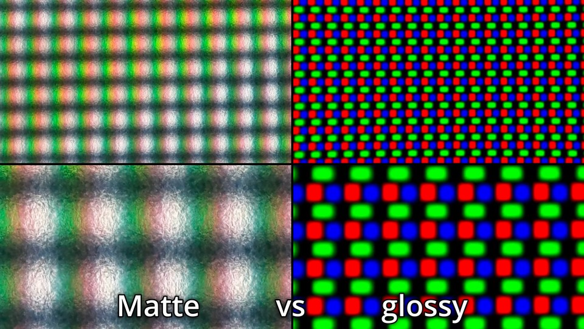图：同一个 OLED 面板前方使用磨砂镀膜与镜面镀膜的微观区别。可以看到没有漫反射的镜面更“通透”。当然，后者的纯色光更容易聚集，LED 调整亮度所必须的频闪亮度变化也更大，容易导致眼部刺痛、散光。源：The Display Guy
抖动滤镜 Dither Filter
源自早期操作系统只能显示有限数量的颜色，因此采用了高频闪烁两种颜色的方法来欺骗视觉（副作用是使人感到晕眩）。在图像、音频和低端显示器中，抖动滤镜代表通过分辨率或采样率来换取位深的加噪补偿手段。
具体来说，通过间隔几个像素就调亮/调暗一个像素的颜色，使得宏观整体上看起来像是淡化或加深；在音频位深分量两端的采样点间成比例的（以方形波或三角波信号）快速摆动，从而利用扬声器反应速度，起到淡化或深化偏移宏观上位深的效果。

{kind=link}
抖动滤镜的效果主要是欺骗视觉，但因为效果独特，所以衍生出了 Ditherpunk 抖动朋克美术。典型如 1bit 游戏《奥博拉丁的回归》贯彻了这种风格——利用随机，蓝噪声，蓝噪声，黄金分割，Riemersma 等不同的加噪算法来定义游戏引擎的材质。
图：图像噪声算法
缩放滤镜 Resize Filter
Windows 系统一般用双线性缩放放大 PPI 小的软件，视频视频播放器一般用 bicubic 或 lanczos 插值
临近取样插值 Nearest Neighbour interpolation（NN）：
- 2x2 的四个像素点移动到缩放后的四个位置
- 待插值的像素中，距离哪四个点近的像素就取哪个像素的值
双线性插值 Bi-linear interpolation（Bi-lerp / Bilinear）：
- 2x2 的四个像素点移动到缩放后的四个位置
- 横向和纵向的点（像素值）间各连一条线
- 采样得到中间的像素，完成四边的插值
- 四边之间接着分为横向与纵向边缘
- 横向和纵向的边（像素值）间各连一条线，共六横六纵
- 所有线段接着采样得到中间的插值像素点，且在横纵线的两种插值之间取平均
样条插值 Spline interpolation（spline）：
- “样条”代表软木条，通过铁钉塑形结合木条的应力做出连贯且一致的曲线
- 这种性质可以用多项式准确描述，而图像中的“铁钉”就是像素值
- 图像中的“木条”就是在 n 个“铁钉”构成的 n-1 个区间里各画一条曲线
- 二次多项式插值 quadratic interpolation 代表三个点间用二次多项式插值
- 三次多项式插值 cubic interpolation 代表四个点间用三次多项式插值，适用于放大图像
- 连起的线必须平滑连贯，数学上叫做“二阶导数连续”
- 因此，放大一个 2x2 的区间需要 4x4 范围的采样点
- 插值的与逻辑和双线性插值一致，同时是三次多项式插值，则是双三次多项式插值 bi-cubic interpolation
Lanczos 插值：
使用 sinc 函数取近似，且引入了窗函数来矫正 sinc 函数，同时要计算 lanczos 核实现插值。计算量大，准确度略高于 bicubic 插值。
神经网络缩放滤镜：
通过认知大量训练数据，在其中找出更高维度规律的情况下，利用这些规律推断像素值。计算量极大，准确度时高时低。
宽高比 Aspect Ratio
矩形的最小两边的比例，被中国航空航天称为展弦比。被忽略的“长”是屏幕相对人眼的 z 轴。而换算长短边如 16:9 高 720 的方形像素视频，其宽就是 \( 720 \div 9 \times 16 = 1280 \)。
图：16:9 的矩形整数偶数放大后的图像分辨率
图片格式一般支持奇数分辨率，视频一般仅支持偶数分辨率。
高/低频 High/Low frequency
假设函数 \(y=\cos\left(ux\right)\)。可以调节变量 u，如 \(y=\cos\left(2x\right)\)，\(y=\cos\left(3x\right)\) 等。u 越大则余弦函数周期越短——频率越高；u 越小则余弦函数周期越长——频率越低。
变换算法可以将这个 u 作为输出数轴，原始波形中从低频到高频的分量都会被准确地排列进来。
程序的交互界面 Interface
图形界面交互 Graphic user interface GUI：通过图形元素（如按钮、滑块、菜单等）进行用户交互的界面设计。随着程序复杂度的增加，设计出好用的界面会变得更加困难。因此，只有在利润丰厚、注重美学设计、且拥有设计人才的行业才会推出外观精美的 GUI。然而，外观好看并不一定意味着好用、再而，很多时候有外观用都是一种奢求。
图：音频插件宿主软件 FL Studio，外加一堆免费和“免费”音频插件随便摆放的外观

图：网页服务器宿主软件 XAMPP 的 GUI（左下为 CLI），作为跨行业对比
命令行交互 Commandline interface CLI：在如 Terminal、Bash、CMD 和 PowerShell 的终端环境中，用户可以手动输入命令并按回车键查看结果。通常，只要输出结果有一定的文本排版，就可以轻松阅读。随着使用的增加，CLI 可能反而会变得比 GUI 更方便。然而，由于某些命令太长，而且需要储存变量，因此为了简化操作，人们会将其写作批处理、Shell 等命令脚本文件。例如PowerShell 一站式系统硬件检测的脚本。
图：Ubuntu（Linux 系统）的终端命令交互程序窗口。
应用编程交互 Application programming interface API：定义编译好的软件应用程序之间应该如何如何相互通信的规则。主要分为跨网络的 API（调用数据库、调用其他网站资源）和本地程序之间（软件、操作系统、电脑硬件）的 API。API 可以被看作是 CLI 的映射。
编解码的过程
注：实际情况下会因为软硬件，用户设定，以及操作系统逻辑的不同而变。
视频的打开
- 用户点击打开视频文件
- 操作系统根据文件扩展名，查找默认的应用程序
- 应用程序根据文件路径，在文件系统中定位视频，并读取文件的元数据，包括文件头和其他格式信息
- 应用程序根据文件的元数据确定所需的解码器和其他资源，然后在计算机的内存中分配空间
- 应用程序调用适当的解码器来解析视频文件，并将视频和音频数据解码为未压缩的原始数据
- 解码后的视频数据传递给图形处理芯片 GPU，而音频数据则传递给声音转换芯片 DAC。
- GPU 将图像信号转换为图像，输出到显示器
- 显示器上的芯片将图像数据转换为对每个像素上电路的控制，并显示出来
- DAC 将音频信号转换为模拟信号，并通过扬声器播放出来
视频的压制
- 打开编码器
- 用户可以通过多种方法打开编码器：
- 如果编码器内置了如 Lavf 的解封装和解码动态链接库，则编码器可以自动解封装、解码和封装视频文件：
- GUI 软件通过发送 CLI 命令，或者使用像 Bash/CMD 这样的 CLI 工具来打开编码器程序。
- 编码器通常根据输出文件的后缀名自动封装视频文件。
- 如果编码器没有内置解封装解码功能，则通常会使用 ffmpeg 内部的解封装工具和编码器。
- 可以使用 pipe 将上游如 ffmpeg、VapourSynth、avs2yuv 连接到下游如 x264/5 的编码器
- 如果编码器内置了如 Lavf 的解封装和解码动态链接库，则编码器可以自动解封装、解码和封装视频文件：
- 用户可以通过多种方法打开编码器：
- 解封装和解码
- 解封装解码工具将已解压缩的 YUV for MPEG 或 RAW 格式视频流传递给编码器，编码器得到输入信号。
- 如果输入是 RGB24 的 RAW 色彩空间视频流，通常需要使用编码器内置的色彩空间转换功能将其转换为 YUV 格式。
- 如果编码器是录像设备的一部分，则需要根据录像设置将视频流拆分为视频帧。
- 解封装解码工具将已解压缩的 YUV for MPEG 或 RAW 格式视频流传递给编码器，编码器得到输入信号。
- 编码过程
- 前瞻进程：Lookahead 从更小的分辨率预先分析未来几帧的复杂度、运动和场景切换 scenecut 的估计。
- 分帧/帧类型决策：根据前瞻进程的结果和关键帧间隔 keyframe interval 设置关键帧 I 帧与参考帧 P-B 帧。
- 粗分块：
- x264 中粗分到宏块 Macroblock MB
- x265 中粗分到编码树单元 Coding Tree Unit CTU
- 动态搜索：Motion Estimation（ME）找到当前帧与参考帧之间的相似区域，并为每个块分配动态向量。
- 运动补偿：Motion Compensation（MC）对比实际画面与搜索到的向量生成预测块，并补偿¼子像素精度的对齐偏差。
- 细分块：根据 MEMC，进一步细分宏块或编码树单元到最小的 4x4 编码块上。
- 帧间残差编码：对比实际画面与动态搜索与补偿后所得的图像，得到残差，并对残差进行变换和量化，存储到 P-B 帧上，在解码时与 I 帧叠加以得到原始画面。
- 帧内预测：在帧内编码块上检查候选出冗余最好的帧内编码方法（夹角、DC、趋平、无），选中方法后得到帧内预测后的块，即预测块。
- 开启率失真优化则进一步检查画质同码率下画质是否也最好
- 帧内残差编码：对比实际画面与帧内预测得到的残差块，进行变换和量化，存储在预测块中，在解码时与预测模式叠加以得到原始画面。
- 跳过块编码：跳过帧间或帧内残差编码的块，进行变换和量化。
- 变换：将图像从空间域转换到低频到高频信号分量之间的每个级别，也称为频域。
- 量化：根据用户设置的质量级别，削减高频信号分量，这一步骤对画质和文件大小影响最大。
- 熵编码/文本编码：将变换和量化后的频域分量统计为最小可能的二进制数。
- 生成视频流
- 编码器将生成的数据流逐个 GOP Group of Pictures 打包为文件，得到完整视频流文件
- 如有必要，附加如色彩空间、Supplemental Enhancement Information SEI、VUI、HDR 等元数据
- 封装视频流
- 用户可以通过多种方法将视频流封装为 .mp4、.mkv、.mov 等格式：
- 如果编码器内置了像 Lavf 的解封装解码动态链接库，编码器可以根据输出命令行的文件后缀名自动完成。
- 如果编码器没有内置解封装解码功能，则通常会使用 ffmpeg 内部的编码器和解封装工具，使编码完成后自动封装。
- 可以使用工具如 ffmpeg、MP4Box，MKVToolNix 等来进行封装。
- 封装文件使得播放器的程序逻辑变得简单（例如，在读取视频流之前就获取视音频格式，而不是先打开所有解码器，再关掉不兼容的解码器）
- 如有必要，附加音频流/音轨、字幕轨、字体等文件（但要根据封装文件的兼容性判断）
- 用户可以通过多种方法将视频流封装为 .mp4、.mkv、.mov 等格式：
视频编码的标准（MDN Docs）
Encoding Standard 一般称为 Codec。
| ♙编码 | 全称 | 一般封装格式 |
|---|---|---|
| AV1 | AOMedia Video 1 | MP4，WebM，MKV |
| AVC (H.264) | Advanced Video Coding | 3GP，MP4 |
| H.263 | H.263 Video | 3GP |
| HEVC (H.265) | High Efficiency Video Coding | MP4 |
| MP4V-ES | MPEG-4 Video Elemental Stream | 3GP，MP4 |
| MPEG-1 | MPEG-1 Part 2 Visual | MPEG，QuickTime |
| MPEG-2 | MPEG-2 Part 2 Visual | MP4，MPEG，QuickTime |
| Theora | Theora | Ogg |
| VP8 | Video Processor 8 | 3GP，Ogg，WebM |
| VP9 | Video Processor 9 | MP4，Ogg，WebM |
其中，“H.264”的 H 代表国际电信联盟 - 电信标准化部门（ITU‑T）中的 H 系列建议指南，例如 ITU-T H.810 个人健康系统（血压计、血糖仪、体重秤）的交互设计建议指南。一些符合某个 H 系列视频编码建议指南的视频编码器会将这个标号写在程序名字上，就有了所谓的 x264，x265。
命令行参数
由开发者定义，将函数或程序中的一些变量设为通过命令传递。命令行参数一般使用空格作为分隔符（也有用半角冒号，半角句号等其他情况），参数和参数值之间一般使用空格做分隔符（也有使用等于号的其他情况），多个参数值之间一般使用半角逗号或半角冒号分隔，而含有空格的参数值则使用半角直引号 "" 或 '' 连起来。
例如，x264 使用 CLI 参数的例子：
x264.exe --rc-lookahead 90 --bframes 12 --b-adapt 2 --me umh --subme 9 --merange 48 --no-fast-pskip --direct auto --weightb --keyint 360 --min-keyint 5 --ref 3 --crf 20 --qpmin 9 --chroma-qp-offset -2 --aq-mode 3 --aq-strength 0.7 --trellis 2 --deblock 0:0 --psy-rd 0.77:0.22 --fgo 10 --nr 4 --output ".\输出.mp4" ".\导入.mp4"
以及 ffmpeg 中使用 CLI 参数启用 libx264，通过 -x264-params 发送 API 参数的例子：
ffmpeg.exe -loglevel 16 -hwaccel auto -y -hide_banner -i ".\导入.mp4" -c:v libx264 -x264-params "rc-lookahead=90:bframes=12:b-adapt=2:me=umh:subme=9:merange=48:fast-pskip=0:direct=auto:weightb=1:keyint=360:min-keyint=5:ref=3:crf=20:qpmin=9:chroma-qp-offset=-2:aq-mode=3:aq-strength=0.7:trellis=2:deblock=0,0:psy-rd=0.77,0.22:nr=4" -fps_mode passthrough -c:a copy ".\输出.mp4"
ffmpeg 中，导入文件由 -i 参数完成，因为 ffmpeg 支持导入多个文件，而每个文件后跟随一些处理命令就需要较为严格的命令添加顺序，而 x264/5 这些编码器一般只是导入一个文件，所以在末尾加一个路径到文件的字符串就代表导入文件了。
图：使用命令行窗口启动视频压制命令后，视频编码器会给出大致这些信息
本教程中命令行参数的说明格式
--参数
<开关 | 整数 A~B | 浮点 A~B | 其它格式，默认值，限制>说明信息，特点注解，推荐这个值，其它情况可设这个值。
- 情况 1：特点如此，推荐这个值
- 情况 2：特点如此，推荐这个值
管道 Pipeline
一种在进程/软件之间通信的操作系统机制。在命令行中写作通过链接符 | 串联起来是两段命令，而两段命令间的数据一般由默认输出 standard output（stdout）和默认输入 standard input（stdin）实现，因此不需要手动添加输出和输入命令。报错则为 stderr。在涉及到文件输入输出的程序时则需要手动指定“-”符号到程序的输入命令中，以取代文件的输入。
串流管道 Stream-based pipe
Windows CMD、Linux Bash 的管道模式，用于传输纯数据，其中的程序同步运行，持续地传输上游输出到下游。适用于串流作业和处理流数据，包括视音频和文本流。
串流管道详解
Linux Bash 中使用 for txt in *.txt; do md5sum $txt; done | awk '{print $2, $1}' | sort -bn 代表：
- 在当前命令行目录下遍历 .txt 文件，生成多行“哈希值 文件名”字符串
- 将文本流传给排列功能，将每行字符的顺序改为“文件名 哈希值”
- 将文本流传给排序功能，按照文件名的数字重排行号并忽略空格，得到按顺序排版的“文件名 哈希值”
对象管道 Object-based pipe
PowerShell 的管道模式，用于传输结构化的对象（变量本身），而不是纯数据。其中的程序按顺序接力，一个程序/协议/函数跑完后再打开下一个。适用于处理对象化数据（面向对象的应用），所以不适合用于处理视音频流文件。
指定默认输入和报错
J:\ffmpeg.exe -i D:\文件夹\源.mp4 -an -f yuv4mpegpipe - | J:\x264-r3206.exe --y4m - --output D:\文件夹\测试.h264 2> D:\文件夹\报错.txt
以上命令代表在 Windows CMD 中：
- ffmpeg 导入 "D:\文件夹" 下的一个视频文件
- ffmpeg 使用
-an命令指定关闭音频编码 - ffmpeg 使用
-f命令指定使用 YUV For MPEG 管道格式，相对于 rawpipe 格式提供了一些视频元数据，使 x264 了解视频的分辨率、帧率、位深等基本参数，否则需在命令行中手动指定 - ffmpeg 使用“-"替代文件路径，指定导出文件到管道
- x264 使用
--y4m -命令指定使用 YUV For MPEG 管道格式，并设定输入流为“-” - x264 导出压制出、未封装的视频流到
D:\文件夹下 - x264 导出任何可能的报错信息到
D:\文件夹下，以避免管道上游的信息覆盖或埋藏
管道的问题与上位替代
- 管道下游程序的报错常被管道上游覆盖或埋藏，需要额外指定报错信息导出路径
- 虽有编程爱好者集成 LAVF 编解码到 x264 编码器中（封装、解封装视频流功能），但不是所有视频编码器都受到这种待遇
- 视频流已经占据了管道，音频流的封装就需要等第二行命令实现了
- 同理，若视频编码命令出错，那么自动化脚本中的封装命令也会失败，使得原本的报错信息更难找到
而上面的命令可以被简化到直接调用 ffmpeg 内置的 libx264 库，从而用一条命令实现压制与封装：
J:\ffmpeg.exe -i D:\文件夹\源.mp4 -c:v libx264 -fps_mode passthrough -c:a copy D:\文件夹\输出.mp4
这种命令行环境下，要注意音频流与封装格式的兼容性。如果要替换或添加新音频轨道，则在 ffmpeg 命令行中输入音频流，并通过 -map、-c 命令指定替换或添加。
数据结构
帧的结构
在 Advanced Video Coding AVC 中，帧的下级结构按照分辨率大小分为条带组 slice group → 条带 slice → 宏块 Macroblock → 块 block。从大小和功能上细分为：
- 帧 frame：
- 关键帧：I/i 帧
- 参考帧：P 帧、B/b 帧
- 条带组 slice group：
- 由灵活宏块排序 Flexible Macroblock Ordering FMO 划分
- 优化解码延迟，提高压缩和参考错误恢复能力
- 条带 slice：
- 关键帧下：I/i 条带
- 参考帧下：I/i 条带、P 条带、B/b 条带
- 空条带：填充网络数据包中，数据不足而无法填满的空位
- 冗余条带：提高数据抗丢包，抗损坏的能力
- 宏块 Macroblock：
- 粗分块，在动态搜索与补偿前完成，面积为 16x16 像素
- 块 Block：
- 细分块，在动态搜索与补偿后完成，面积为 8x8 或 4x4 像素
- 关键帧下：帧内预测块、帧间预测块
- 参考帧下：帧内预测块、帧间预测块、帧内残差块、帧间残差块
- 帧间预测块：将 I 块叠加帧间动态矢量后变出的帧间预测画面
- 帧内预测块：从块左侧和顶部的一排相邻像素上，叠加插值算法变出的帧内预测画面
- 残差块：保存帧间和帧内预测无法还原的信息，与预测宏块叠加用。画面复杂则“残差才是本体”
GOP 结构
而相对的，在帧之上的结构被称为图组 Group of pictures。每个 GOP 的创建取决于关键帧间隔设置以及转场判断，其中都包含了 IDR 帧，i 帧，P 帧，Pyramid-B 帧以及 b 帧。一个视频中最少由一个 GOP 组成，同视频长度下 GOP 的数量越多则视频体积越大，解码难度越低。
- 关键帧 IDR 帧，I 帧：
- I 帧 Intra-coded frame独立编码，不依赖于其他帧的关键帧。也可以作为解码的起始点，只是不会刷新参考帧列表，所以强行播放可能会有一些画面错误
- “关键”代表“起到独立解码，随机访问点 Access point，传输错误后重新同步视频流，集中参考源以提高压缩率等关键作用”
- 即时解码刷新 Instantaneous Decoder Refresh 帧是一种带有刷新标记的特殊 I 帧，解码器播放到 IDR 帧时会刷新参考帧列表，因此 IDR 帧之前的帧不再作为参考源，从而隔离了 GOP。
- IDR 帧一般位于 GOP（Group of Pictures）之首。用户拖动进度条时，解码器会寻找最近的 IDR 帧解码
- IDR 帧与 I 帧同为关键帧，有时会被写作 I 帧与 i 帧
- IDR 帧数量过少时，可能会导致以下问题：
- 随机访问会导致参考错误 + 长时间无法纠正画面错误：P，B，b 帧会尝试参考 i 帧之前的帧
- 剪辑困难：专业视频编辑软件会在剪辑视频时会插入新的 IDR 帧以保证预览流畅和准确
- 随机访问困难，因为 GOP 的基础结构不存在，拖动进度条需要从视频开头解码到新的位置以后才能播放
- 拖动进度条代表需要从很远的 IDR 帧（无 IDR 帧则从视频开头）解码到新的位置再继续，等待的时间变得漫长，播放设备的发热增加
- 如果播放器关闭了拖动进度条的精确索引，则拖动进度条会导致进度条位置偏移到其之前很远的 IDR 帧上，或返回开头
- 如果 I 帧数量过少，则会有一串含有 I 条带的 P 帧替代它
- IDR 帧的数量由 Keyframe interval
--keyint参数和--scenecut参数决定 - I 帧的数量由
--min-keyint参数决定
- I 帧 Intra-coded frame独立编码，不依赖于其他帧的关键帧。也可以作为解码的起始点，只是不会刷新参考帧列表，所以强行播放可能会有一些画面错误
- 参考帧 P/B-Pyramid/b 帧：
- 参考帧 P 帧 Prediction frame 含有 I 条带与 P 条带，全部条带都可以给临近的 P，B 帧参考
- 双向参考帧 Bi-directional prediction frame，b 帧含有 i，P，B 条带，只有 i 条带可以给临近的 P，B 帧参考
- 尖塔 B 帧 Pyramid bi-directional prediction frame 含有 I，P，B 条带，全部条带都可以给临近的 P，B 帧参考
多参考帧的结构
x264 首次引入了超过前后一帧长度的帧间参考范围。因此动态搜索也能更好的检查运动向量的时间一致性，从而减少动态噪点对动态搜索的干扰，同时提高了压缩。多参考帧不是越长越好，而是只要满足「一帧只要参考前后各 n 帧的信息就足以还原自身」的长度就是对的，而超过后会导致视频体积增加，同时画质降低。这个长度一般是前后各 3 帧，
前瞻进程 Lookahead
最先启动，设立关键帧和参考帧，决定了 GOP 划分的初始编码步骤。决定了后续所有步骤的大纲：
- 启动和初始化：
- 从视频或
--seek参数指定的位置开始，顺序导入视频帧到 Lookahead 过程 - 导入的视频帧会被缩小一半以提高速度
- 后续步骤发现 GOP 结尾时，当前的 Lookahead 帧列表（
h->Lookahead->next->list）会更新 Lookahead 起点。
- 从视频或
- 软转场（Scenecut）：
- 如果输入的首帧是自动 AUTO 模式或 I 帧，则设为 IDR 帧
- 如果使用
--no-open-gop，且输入帧与之前的非 B 帧画面差距达到--scenecut阈值触发转场，则设立 IDR 帧以建立新的 GOP - IDR 帧（于
--min-keyint范围内则设 I 帧）的前一帧会被强制改为 P 帧，以阻止 B 帧的双向参考特性
- 启用/关闭连续 B 帧：
- 排除了设立 I/i 帧的可能后，还剩下 GOP 长度减 1 的帧数量没有被分配帧类型。
- 此时不考虑 Pyramid-B 帧，所以这些帧可以是 IDR/i/P/B 帧。如果设 IDR 帧则 GOP 收尾
- 根据
--b-adapt指定的算法和--bframes的最大连续 B 帧长度，区分出 P 帧和 B 帧，得到如 PBBBPBP 的序列 --b-pyramid参数允许连续 B 帧中的偶数帧作为参考帧使用，保证了长距离的连续 B 帧
- 维特比算法推演 P/B/b 帧：
- Viterbi shortest path 是一种多起点 - 多终点，类似于 A*和 Dijkstra 的最短路径算法。假设一种成本模型：
- I 帧成本最高，记为设立成本 \(cost_I=10\)；I 帧后的非 I 帧成本 +1，记为转换成本 \(cost_{IS}=1\)
- P 帧成本次之，记为设立成本 \(cost_P=5\)；P 帧后的非 P 帧成本 +1，记为转换成本 \(cost_{PS} = 1\)
- B 帧成本最低，记为设立成本 \(cost_B=2\)；B 帧压缩最高，记为转换成本 \(cost_{BS} = 0\)
--ref参数设定了参考帧的最远范围，使编码器不总选择成本最低的 B 帧
- 应用到推演各帧的可能路径图：
- Frame 0: I0, -, -（GOP 首帧只能是路径中的 I 帧）
- Frame 1: I1, P1, B1
- Frame 2: I2, P2, B2
- Frame 3: I3, P3, B3
- Frame 4: I4, P4, B4
- ...
- 由此推演第 0，第 1 帧的成本，其中\(cost(I_0)\)代表第 0 帧为 I 帧的成本，\(cost(I)\)代表设立 I 帧的成本，则记为转换成本（当然此处严格一些应该直接写成 1）：
- Frame 0: \(10\), \(\text{-}\), \(\text{-}\)
- Frame 1: \(cost_{I0} + 10\), \(cost_{P0} + cost_{IS} + 5\), \(cost_{B0} + cost_{IS} + 2\)
- Frame 1: 20, 16, 13，或 \(cost_{I1} = 20\)，\(cost_{P1} = 16\)，\(cost_{B1} = 13\)
- 正式采用维特比算法——选择每个帧的成本变为枝梢计算：设立成本 + 上帧三条路径中的最小值，推演第 2 帧及其后帧的成本：
- \(I2 = min(cost_{I1} + 10, cost_{P1} + cost_{PS} + 10, cost_{B1} + 10) = min(20 + 10, 16 + 1 + 10, 13 + 10) = min(30,27,23) = 23\)
- \(P2 = min(cost_{I1} + cost_{IS} + 5, cost_{P1} + 5, cost_{B1} + 5) = min(20 + 1 + 5, 16 + 5, 13 + 5) = min(26,21,18) = 18\)
- \(B2 = min(cost_{I1} + cost_{IS} + 2, cost_{P1} + cost_{PS} + 2, cost_{B1} + 2) = min(20 + 1 + 2, 16 + 1 + 2, 13 + 2) = min(23,19,15) = 15\)
- Frame 2: 23, 18, 15
- \(I3 = min(cost_{I2} + 10, cost_{P2} + cost_{PS} + 10, cost_{B2} + 10) = min(23 + 10, 18 + 1 + 10, 15 + 10) = min(33,29,25) = 25\)
- \(P3 = min(cost_{I2} + cost_{IS} + 5, cost_{P2} + 5, cost_{B2} + 5) = min(23 + 1 + 5, 18 + 5, 15 + 5) = min(29,23,20) = 20\)
- \(B3 = min(cost_{I2} + cost_{IS} + 2, cost_{P2} + cost_{PS} + 2, cost_{B2} + 2) = min(23 + 1 + 2, 18 + 1 + 2, 15 + 2) = min(26,21,17) = 17\)
- Frame 3: 25, 20, 17
- \(I4 = min(cost_{I3} + 10, cost_{P3} + cost_{PS} + 10, cost_{B3} + 10) = min(25 + 10, 20 + 1 + 10, 17 + 10) = min(35,31,27) = 27\)
- \(P4 = min(cost_{I3} + cost_{IS} + 5, cost_{P3} + 5, cost_{B2} + 5) = min(25 + 1 + 5, 20 + 5, 17 + 5) = min(26,25,22) = 22\)
- \(B4 = min(cost_{I3} + cost_{IS} + 2, cost_{P3} + cost_{PS} + 2, cost_{B2} + 2) = min(25 + 1 + 2, 20 + 1 + 2, 17 + 2) = min(28,23,19) = 19\)
- Frame 3: 27, 22, 19
- Frame 4: 29, 24, 21
- 将复杂度（前后两帧画面差距）视作分母 \(cplx_{0→1}\)，将路径的值视作分子，就得到了该简化例子下的路径成本：
- Frame 0: I0, -, -（GOP 首帧只能是路径中的 I 帧）
- Frame 1: \(\frac{cplx_{1→2}}{I1}\), \(\frac{cplx_{0→1}}{P1}\), \(\frac{cplx_{0→1}}{B1}\)
- Frame 2: \(\frac{cplx_{2→3}}{I2}\), \(\frac{cplx_{1→2}}{P2}\), \(\frac{cplx_{1→2}}{B2}\)
- Frame 3: \(\frac{cplx_{3→4}}{I3}\), \(\frac{cplx_{2→3}}{P3}\), \(\frac{cplx_{2→3}}{B3}\)
- Frame 4: \(\frac{cplx_{4→5}}{I4}\), \(\frac{cplx_{3→4}}{P4}\), \(\frac{cplx_{3→4}}{B4}\)
- ...
- 如此一来，编码器就能得知什么时候设什么帧了
- Viterbi shortest path 是一种多起点 - 多终点，类似于 A*和 Dijkstra 的最短路径算法。假设一种成本模型：
- 宏块树搜索 MBTree：
- 分析时间空间范围内的块分布，找出少见的宏块，并计算出这些块的压缩强度偏移，以提高这些块的压缩
- 偏移程度的计算考虑了 Lookahead 中快速动态预测的准确度（当前和未来两帧相减，差距越大越复杂）
- 偏移程度的计算还考虑了当前帧与软转场 GOP 首帧的距离，距离越远越少见，分配的压缩强度越大
- 在这之前的软转场已将画面分界，所以“距离远”代表画面不变的情况下的距离远
- 硬转场 keyint：
- （等 mbtree 完成后）如果使用
--no-open-gop，且当前 GOP 长度达--min-keyint大小，则设立 IDR 帧以建立新的 GOP - IDR 帧（于
--min-keyint范围内则设 I 帧）的前一帧会被强制改为 P 帧，以阻止 B 帧的双向参考特性
- （等 mbtree 完成后）如果使用
- 量化值预设：
- 根据
--rc-lookahead参数指定的长度为一组，通过当前和未来两帧相减，得到差值，以大致分配压缩强度
- 根据
- VBV/VBR/CBR 码率限制：见x265 教程网页版：下层——VBR，CBR 模式
--min-keyint
<整数，默认 25，小于等于 keyint>判断新发现的转场距离上个 IDR 帧是否小于该值长短。有两种设定逻辑，而它们给出的画质都一样：
- 一般通用，一定程度上防止硬转场干扰软转场的溯块参考冗余：keyint ÷2
- 少设一些 IDR 帧，以略微提高压缩率和编码速度5 或更高
- 快速编码/直播环境：等于 keyint
- 多设一些 IDR 帧，一帧被判做转场本来就意味着前后溯块的价值不高。损失编码速度和压缩率，使复杂画面更接近素材视频级的图片序列，从而分配更多的码率 1 或 2
--keyint
<整数>一般设 9 倍于帧率（9 秒一个 IDR 帧），影响视频解码计算难度和拖进度条的延迟：
- 短视频，不拖进度条的视频：keyint -1略微降低文件体积
- 剪辑素材，频繁于多个视频轨上，根据画面复杂度设5 倍于帧率，以降低解码负载
--ref
<整数 1~16>多参考帧前后帧数半径，一图流设 1。必须要在溯全尽可能多块的情况下降低参考长度，所以推荐 3：
--no-mixed-refs
<开关>关闭参考帧混合溯块（16×8，8×8 分块的参考）以提速，增加误参考。不推荐
--scenecut
<整数，不推荐用>Lookahead 中两帧差距达到该参数值则触发转场
--seek
<整数，默认 0>从第几帧开始压缩
--frames
<整数，默认全部>一共压缩多少帧
--fps
<整数或除法>设定输出视频帧率，只有源视频帧率错误才用得到。制动该参数后会自动开启 -force-cfr
--force-cfr
<开关>强制设定视频帧到整数时间码，可能用于对齐小数帧率的误差（如 23.976 或 24000/1001 变成 23.977）用
--fullrange
<开关，7mod x264 自动>启用 0~255 色彩范围，而不是默认的 16~235。视频内容永远不在使用有限色域设备/软件/视频网站下播放下可以考虑开启
动态预测 Motion Prediction
在参考帧（P-B 帧）的预测块 Prediction Block 上，动态搜索（ME）之前，起到提供动态搜索起点功能的预测算法。x264 使用了 --direct 指定。x265 中则使用了更高级的 AMVP + Merge 算法。
视频里往往会有占据画面不小的物件朝着一处平移，在视频帧中表现为“某个区域的分块拥有高度相似的运动向量”。这些重复性的动态向量分布规律肉眼可见，而动态搜索只能通过不断地计算差异而一个一个方向和大小地把向量给试出来。这显然不如通过预测而快速地找出一组方向与大小（然后让整数像素动态搜索从这里开始微调到整数像素精度）直截了当。
由于动态向量预测得到的向量本身就已经足够靠谱，因此编码器会以“预测动态向量（PMV）+ 动态向量差（MVD）”的形式记录每个帧间块的动态信息，再冗余掉相同的预测动态向量，从而进一步提高压缩。尽管一个动态向量的信息不多，但放眼到整个视频的所有帧间参考时，质变也就产生了。
--direct
<temporal/spatial/auto> 指定动态搜索判断方式的参数，除直播和低性能设备录屏外建议 auto
动态搜索 Motion Estimation（ME）
注：它的专业术语是运动搜索、运动估计。
在连续帧间画面中，进行运动估计的整数像素精度动态信息搜索步骤，涵盖了多种搜索算法，也被用于不同的信号处理领域。具体步骤是以被参考帧内的已编码块（Coded Block）为起点，尝试通过位移来匹配相邻帧的画面，从而找到一个失真最小的向量 Direction of minimal distortion（DMD），这个向量就是整数动态向量。
为了找到可用的最小失真朝向，并且避免进行算力占用巨大的全搜索（Exhausive Search），动态搜索演化出了多种匹配的图案和算法。其中，较为聪明的动态搜索算法是多级算法，它们首会先尝试在较大范围进行粗略搜索，再以大致最佳区域为中心进行精细搜索，从而（包括在噪点干扰下）多快好省地找到整数动态向量。在整数动态搜索之后，还会由子像素动态搜索（Sub-pel Motion Estimation）来进一步做对齐，最终，这个动态向量被用于冗余预测块，以及对高动态画面提高有损压缩强度，从而压缩体积并优化码率的分配。
如果动态搜索的过程有缺失或不够理想，参考帧与分块的建立会变得低效，码率分配也会变得不够合理，导致画质的降低和码率的增加。

图：宏块上帧间的动态向量
简化模型下，动态搜索得到帧间向量表，帧间向量表加上上帧的画面得到预测帧，原始帧减去预测帧得到残差帧，残差帧储存为参考帧，得到帧间结构。x264 使用了不对称多六边形搜索 Uneven multiple Hexagon，从而让一个搜索算法在多个分辨率下检查画面，制衡了动态噪点对传统动态搜索算法的干扰。搜索算法详见 x265 教程。
--me
<hex/umh/esa/tesa，推荐 umh> 搜索算法，umh 平衡，star 四角星搜索之后收益递减，sea 是优化过的 x264 esa 穷举，但收益递减仍大。umh 通过多种分辨率大小的查找范围，减轻了动态噪点对传统搜索算法的干扰
--merange
<整数，推荐 4 的倍数，需 me>完全取决于 ME 算法和分辨率，过大会因「找不到更好，找到也是错」而损失画质和压缩。
- 1920x1080 下推荐48左右
- 3840x2160 下推荐52左右
- me hex 下设16
- me umh 设≥32
--no-fast-pskip
<开关，推荐开> 关闭跳过编码 P 帧的功能
--no-chroma-me
<开关，推荐直播/录屏用> 跳过色度平面动态搜索，将亮度平面直接应用。可能对画质有略微负面影响
绝对变换差和 SATD
Sum of absolute transformed difference 为两个变换块间做差，取和，取绝对值的步骤：
- 首先计算两个块 B 的插值，记做残差块 D：\(\text{D}(x,y) = B(x,y) - B\prime(x,y)\)
- 然后通过哈达码变换（相比 DCT 节约算力），得到变换残差块：\(T(D)\)
- 省略这一步，则算法叫做绝对差 Sum of absolute difference SAD
- 最后，变换残差块的每个像素取绝对值和：\(\text{SATD}(B,B\prime) = \sum_{x=0}^{n-1}{\sum_{y=0}^{n-1}}| T(D(x,y)) |\)
注：为了简化所以写作 \(T(D(x,y))\)，实际这样相当于每加一个像素值就要变换一遍
子像素运动补偿
全称 Subpixel refinement。动态预测的精度最高只有 1px，在此之上还有可能被动态噪点干扰，导致了预测帧相比原画会欠缺大量的纹理细节。动态补偿 Motion Compensation MC 通过对比原画与预测块得到残差，并根据残差的分布动态向量的精度到¼子像素，使“精加工预测块”的画面残差尽可能地缩小，得到足够准确的预测帧，即大幅减少残差帧的内容。
图：根据动态搜索与补偿所得，完成宏块到块的细分
至于对抗动态噪点，大体上是允许真正移动的物件（所涵盖的分块）有运动向量，拦截噪点在静止画面上的孤立运动向量，即「允动之移，防静所变」解决，详见 x265 教程。
- 此处省略上帧画面 + 帧间向量表中的动态向量 = 一系列粗加工预测块的步骤
- 使用有限冲激响应插值滤镜 FIR filter 放大画面以便后面对齐
- 将“粗加工预测块”与源视频所对应的画面使用 SATD 做差，得到当前的误差程度
- 当前向量的 x，y 分量分别加减 ½，¼ 像素（插值放大的画面中是整数像素），即分别让这些块对比原画跑一遍 SATD：
- \(B\prime(x+½,y),B\prime(x,y+½),B\prime(x+½,y+½),B\prime(x+¼,y),B\prime(x,y+¼),B\prime(x+¼,y+¼),B\prime(x+¼,y+½),B\prime(x+½,y+¼)\)
- 选出 SATD 误差值最小的块——中的 x,y 分量，纠正帧间向量表的动态矢量，完成补偿
关于 FIR 插值滤镜，以及 x264/5 分别使用了哪些插值和搜索方法，见x265 教程网页版 - 动态补偿。
--subme
<整数 1~10，推荐 6~10>调整具体的动态补偿强度，x264 中同时决定模式决策和率失真优化的强度。根据画质和编码速度选择合适的大小：
- 1 逐块 1/4 像素使用 SAD 算法检验一种对齐
- 2 逐块 1/4 像素 SATD 算法检验两种对齐
- 3 逐宏块 1/2 像素 SATD 一次，逐块 1/4 像素 SATD 一次
- 4 逐宏块 1/4 像素 SATD 一次，逐块 1/4 像素 SATD 一次
- 5 同时增加双向参考 B 块
- 6 同时 I，P 帧启用率失真优化处理
- 7 同时 I，P，B，b 帧启用率失真优化处理
- 8 同时 I，P 帧启用
rd-refine功能 - 9 同时 I，P，B，b 帧启用
rd-refine功能 - 10 使用
--me hex动态搜索检验对齐，需--trellis 2 --aq-strength > 0 - 11 关闭所有提前退出，边际效应过大，不推荐使用
rd-refine（内部参数）
<嵌入 --subme 8 中，x265 中可手动打开> 率失真优化分析帧内预测的最佳量化和分块结果，耗时换压缩率和画质。x264 中还包括了最优动态向量的分析
细分块
--partitions
<字符串 p8x8，p4x4，b8x8，i8x8，i4x4/none/all，默认 p8x8，b8x8，i8x8，i4x4，推荐 all>允许的细分块种类。增加分块种类会增加计算负载，但 x264 放到现在来看，也只有高分辨率快速编码场景才需要保持默认。因此推荐 all
- 开启 p8x8 会同时启用 p16x8，p8x16
- 开启 p4x4 会同时启用 p8x4，p4x8
- 开启 b8x8 会同时启用 b16x8，b8x16
- 因为 边际效益太小，x264 开发者取消了 b4x4 分块
变换
模拟信号转换为数字信号的主要步骤之一——将音量、亮度、温度、压力等信号整理为低频到高频的单一信号/波形分量。具体来说，这个过程根据要处理的信号和用途不同，会使用傅里叶变换，小波变换，和 x264/5 使用的二维离散余弦变换 2D Discrete cosine transform。二维离散余弦变换利用预制的二维波形模具，通过穷举加减将源信号逐步分解成不同频率的平面波形，并合成变换块。图：缩放到 8x8 的波形分布，由于 cos(x) 的波形范围是 -1~1，所以图中的黑色到白色并不是 0~255 或 16~235，而是 -1~1

变换的过程中，“DCT 像素”称为系子 coefficients。这些系子的强度可以是负值，表示反相的波形；也可以是小数，表示低强度的波形（但因为计算机浮点计算慢于整数计算，所以一般仅用于演示）。变换块左上角的系数是直流 DC 分量，代表整体亮度水平，其余的系数是交流 AC 分量，表示图像中的细节和纹理信息。
量化
根据压缩强度给出一个除数或矩阵数组，将变换结果的每个值除以这个除数或矩阵中同位的值，只保留和使用商来解码播放，从而实现压缩。这步操作是压缩中画面损失最大的步骤。
量化值 Quantization Parameter
QP 是 CRF，ABR 等码率质量控制模式算出，以及率失真优化量化、模式决策等步骤所调整的中间变量
量化步长 \(Q_{\text{step}}\)
Quantization Step-size 是量化值量化强度参数值与实际量化强度之间的映射值。规则大致是量化强度增加 1，则 qStep 增加 0.125；QP 每 +6 则 qStep 乘以 2，使其越往后增量越大：
| QP | 0 | 1 | 2 | 3 | 4 | 5 | 6 | 7 | 8 | 9 | 10 | 12 | 14 | 16 | 18 | 20 | 22 | 24 | 26 | 28 | 30 | 32 | 34 | 36 | 38 | 40… |
|---|---|---|---|---|---|---|---|---|---|---|---|---|---|---|---|---|---|---|---|---|---|---|---|---|---|---|
| \(Q_{\text{step}}\) | 0.625 | 0.6875 | 0.8125 | 0.875 | 1 | 1.125 | 1.25 | 1.375 | 1.625 | 1.75 | 2 | 2.5 | 3.25 | 4 | 5 | 6.5 | 8 | 10 | 13 | 16 | 20 | 26 | 32 | 40 | 52 | 64… |
x264 中，量化值大致上存在于以下几处：
| 步骤 | 名称 | 应用 |
|---|---|---|
| 率控制 | CRF/ABR | 逐帧量化强度（或全局量化强度） |
| I-P 帧质量比 | I-P Ratio | P 帧量化强度 |
| P-B 帧质量比 | P-B Ratio | B 帧量化强度 |
| 自适应量化 | Adaptive Quantzation AQ | 逐块量化强度 |
| （率失真优化）模式决策 | Mode Decision MD | 逐块量化强度 |
| 率失真优化量化 | Rate-distortion optimized quantization RDOQ | 逐块量化强度 |
| 色度块量化强度偏移 | --chroma-qp-offset |
亮度与色度块量化强度 |
率控制
码率分布成因
有损压缩中，只是优化码率分配本身就可以提高当前视频的画质。这是因为参考帧 P、B 帧自身的主要信息来自于被参考帧 I 帧，其中被冗余的宏块只储存“相对于被参考帧的动态向量”，和“残差画面”。这种画面并不锐利，因而（在熵编码后的）体积占比非常小。而尽管被参考帧 I 帧的体积很大，但 I 帧自身的画面为其后的若干至数百帧提供了参考，使得高画质的 I 帧反而提高了帧间冗余压缩率（与使用 10bit 位深后，码率不增反降的原因相同）。假如被参考帧 I 帧的有损压缩较高，那么在环路滤镜组/率失真优化过程中，编码器会发现 I 帧与 P、B 帧之间不太相像；便会提高残差画面的信息量。于是虽然峰值码率会降低，但 I 帧后的一系列帧都会比以往大一些，造成整体的码率/文件体积上升。在这个基础上：
- 如果视频本身的画面变化偏大，那么参考帧 P、B 帧一开始就会储存更多的残差信息
- 如果一开始就要求限制峰值码率，那么即使文件体积增加，码率提高也是没办法的事
- 如果一开始就要求固定文件体积大小（不超过某个程度），那么原本的“码率提高”就会完全变成“画质降低”
图：这段 1920x1080 视频约有 36000 帧，其中 I 帧占 1%。从趋势线可以看出平均每帧的大小位于 200Kb 以下（很多都在 10b 以下）。2000Kb 以上的帧零散存在，中心还有一张 9544 Kb（1.2MB）的帧。
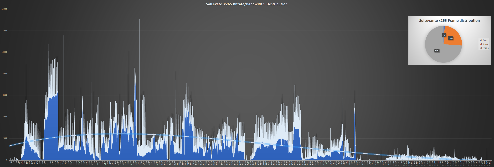图：这段场景动态复杂的 3840x2160 视频约有 6000 帧，除了 I 帧的尖峰以外，出现了整块隆起的码率分布，左侧的复杂部分达到了 6~10Mbps。
压制三角形
一般情况下，用户希望在可接受的编码速度（fps 为单位）下，得到画质较高、文件体积较小的视频，构成了压制三角形。要求速度和文件体积则失画质、要求文件体积和画质则损速度、要求速度和画质则损文件体积。
图：三种出发点构成。其“完美中心点”不一定符合当下需求，但决定了是否能满足所有情况
图：不同率控制模式权衡编码速度，画质，文件体积的能力不同，当然有的模式根本没得选
两个一致、三边取点
“码率分布成因”中说明了在画质高度一致时，逐帧的码率变化非常大，在网络播放时可能会因为峰值而卡顿；反过来倘若要限制码率变化/波动，则画质的一致性便会下降（或文件体积增加）。于是在选择率控制模式时，要在“两个一致”之间妥协。
“压制三角形”中说明了在速度、画质和文件体积三者此消彼长，虽然大多情况下选择兼顾三者的中心点即可，但也需要根据不同场景的要求加以偏置
率控制模式
平均码率模式 Average Bitrate
- 设定统一的“平均每帧大小”（以码率每秒 / Kbps 统计）
- 编码器会根据目标平均码率和剩余帧数，粗略估算每帧可用的码率预算，只要这个平均值不超过用户设定的平均码率，就按照现有逻辑（MEMC、帧类型、块大小）设定每帧的量化强度
- P、B 帧由于运动矢量等信息依赖其他帧，通常量化强度可以更高，体积更小
- I 帧则要独立编码，体积较大，如码率紧张，I 帧可能需要更强量化（画质下降更明显）
ABR 模式优缺点
- 思路简单快速
- 适合直播场景
- 编码器编码 GOP 前半部分时照此操作无妨，但到了后面，若画面突然开始变化，那么当前码率会立刻上升到设定的平均码率上限，此时只能分配更强的量化强度的“码率分配不匀问题”
- 如果用户设定的码率太低，ABR 模式会设立强量化
- 如果强量化不够还会启用一些滤镜，导致画面损失太严重，无法辨认内容
- 如果用户设定的码率大于等于如 CRF、2pass 模式，则仍可能遇到“码率分配不匀问题”
全局/固定量化强度模式 Constant Quantizer
- 跳过量化强度自适应算法，直接由用户指定 I、P、B（等）帧各自的量化强度
CQP 模式优缺点
- 速度最快
- 可以通过设定最小量化值的方法跳过量化，实现一种无损压缩模式
- 码率分配不匀问题最严重，码率与文件体积体积不易预测
质量呼应码率模式 Constant Rate Factor
- 在设定量化强度指标（CRF 参数值）的基础上，允许编码器根据当前画面的特性与帧类型进一步优化每帧的量化强度分配
- 若 CRF 值较低，而当前帧可以使用较高的量化压缩强度（如参考帧 P、B 帧）时，编码器会提高量化强度；这样不但文件体积缩小，损失的画质也肉眼难辨
- CRF 值越大，最终画质越差、码率越低；这样码率的分配仍然会是均匀的极优解
CRF 模式优缺点
- 同码率下的压缩率、画质最好，最适合用于分享和收藏高质量小体积视频素材
- 在要求实时编码的场景中可能会因为编码 I 帧考虑太多、用时过长、导致延迟丢帧
- 调整 CRF 和 CQP 模式不能直接控制文件体积，尽管这是因为“视频在这个质量下，只能压缩到这个程度”，但有时会导致用户不理解
- 在严格要求视频体积的场景中，如微信等平台会因为文件体积限制而不便于分享
- 尽管这种情况下应该用技术更先进的编码器，但因为用户、平台、手机厂商的多方因素，所以导致了视频打不开的兼容性问题
恒定码率模式 Constant Bitrate（CBR）、可变码率模式 Variable Bitrate（VBR）
- 在 ABR 或 CRF 模式的基础上启用码率缓冲区（Video Buffer Verifier、VBV）控制得到
- CRF 模式本质上属于半个 VBR 模式，ABR 模式本质上属于半个 CBR 模式；两者都依赖 VBV 限制码率峰值
- 当码率超过用户指定的 VBV 上限，则编码器自动增大量化强度，以防溢出
- I 帧后的一系列帧都会比以往大一些，造成整体的码率/文件体积上升，峰值下降
- 如果整体码率上升触发 ABR 限制，则进一步增加量化强度，画质下降，换来带宽控制，得到变化更平稳的码率分布
CBR、VBR 模式优缺点
- 可以解决峰值码率过大的问题
- 代价是整体文件体积提升（VBR），或者整体画质下降（CBR）
- 使得 CRF、ABR 模式能够更好地胜任直播、串流（外网网络播放）场景
两遍模式 2pass
- Pass 1：运行 CRF 或 ABR 模式，得出每帧的量化强度，从而得出码率分配统计
- Pass 2：运行 ABR 模式，利用第一遍采集的码率分布，事先完成所有帧的码率预分配，从而精准控制文件体积
- 尽管不同的编码器对 2pass 模式的实现有差异，但基本流程与此处一致
2pass 模式优缺点
- 解决了 ABR 模式在 GOP 前后码率分配不匀的问题
- 码率分配不匀的问题被弱化，只要最终码率类似，2pass 就能做到相当于 CRF 同码率的均匀度
- 能够精准控制文件体积（目标体积 ÷ 视频时长 = 目标码率），适用于硬性要求视频体积，还要考虑编码兼容性的场景
- 例如，一个聊天平台限制上传文件不可以超过 200MB，就是一种硬性体积要求
- Pass 2 与 Pass 1 的帧类型分布（绝大多情况下）必须完全一致，所以如转场、关键帧、前瞻进程等设置需要更改时只能重做 Pass 1
- 如果要使用高压缩，则必须在 Pass 1 就使用速度较慢动态搜索与补偿，从而使得整个流程下来的编码用时远超其他模式
- 流程复杂，故障点（Point of failure）最多，操作相对困难
常见的误解误区
- “我有硬性视频体积要求。我要求在保证一定视频质量的同时，将体积缩的小一点，所以应该使用 2pass 模式”
- 硬性不是弹性，如网站对文件体积的大小上限“不得超过 200 MB”才是硬性需求
- “保证一定视频质量的同时，将体积缩的小一点”是 CRF 模式所针对的需求
- “我希望控制体积和码率，画质差一些可以，但不能一会清晰一会模糊，所以应该使用 CBR 模式”
- CBR 模式保证的是码率变化的一致性，在上面的例子中已经展示了画质高度一致时的码率变化
- CRF 模式有“CRF 值”来保证画质的一致性，应该使用 CRF 模式
- “我的视频要上传到视频平台，上面说达到多少平均码率后可以免二压，所以应该使用 2pass 模式”
- 所谓的免二压规则早已绝迹，视频平台一律压缩上传的视频，除非是个人搭建的网站
--ipratio --pbratio
<浮点，默认 1.4、默认 1.3>P 帧相比 IDR/i 帧，以及 B/b 帧相比 P 帧的质量偏移。默认预设是给录像视频片源用的。
- 低成本动漫/多静态画面/PPT 录屏画面：各降低 0.2
- 剪辑素材：提高 --crf，不用改这两个参数
- YCbCr 4:4:4 片源：x264 默认会自动修改 --chroma-qp-offset，不用改这两个参数
CRF 模式
质量呼应码率模式，统称 CRF。压制三角形下距离妥协中心点最近的模式。因此也是压制最常用的模式。编码器逐帧分析量化强度，为每帧分配一个量化值。
--crf
<浮点范围 0~51，默认 23>据 cplxBlur，cutree，B 帧偏移给每帧分配各自量化强度的固定目标质量模式。素材级画质设在 16~18，收藏~高压画质设在 19~20.5，YouTube 是 23
ABR 模式
编码器自行判断量化程度，尝试压缩到用户定义的平均码率 average bitrate 上，速度最快
--bitrate
<整数 kbps>平均码率。若视频易压缩且码率给高，就会得到码率比设定的片子；反过来低了会不照顾画质强行提高量化，使码率达标。一般推流用的“码率选项”就是设置了这个参数
CQP 模式
--qp
<整数 0~69，禁用 CRF/ABR/模式决策/率失真优化>设定全局量化强度。除非有既定目的，否则不建议使用。如果要手动指定特定范围的帧类型和量化值，则应使用 SBRC 下层模式
Zones 分段模式
手动指定帧数片段，每个片段允许指定一种上层模式和一些控制参数。
--zones
<开始帧，结束帧，参数 A，参数 B…> 手动在视频中划区，采用不同上层模式来实现如提高压制速度，节省平均码率，提高特定画面码率等用途 (一般用来"处理"片尾滚动字幕). zones 内的 me, merange 强度/大小不能超 zones 外。可用参数有 b=, q=, crf=, ref=, scenecut=, deblock=, psy-rd=, deadzone-intra=, deadzone-inter=, direct=, me=, merange=, subme=, trellis=
- 参数 b= 调整码率比率，限制
--zones内的场景使用当前 0~99999% 的码率，100% 相当于不变 - 参数 q= 即 CQP 模式的
--qp参数
2pass 模式
先用 CRF 模式分析整个视频总结可压缩信息，后根据 ABR 模式的码率限制统一分配量化值。有 pass 2 给特别高的平均码率，输出最小损失的最小体积近无损模式，以及 pass2 给码率硬限的全局整体压缩模式
--pass 1
<挡位，导出 stats 数据文件>
--pass 2
<挡位，导入 stats 数据文件>
--stats
<路径，默认在 x264/5 所在目录下>设定导出和导入 stats 数据文件的路径和文件名
VBR，CBR 模式
带宽是有限资源。一旦网络、硬盘、内存、PCIE 等等带宽慢于当前视频码率，播放就会卡顿。因此在播放流媒体前，播放器会设置一段内存缓冲区，利用了传输速度有时会快于当前视频码率的随机条件，预加载一些数据以求播放不卡顿。此时问题变成了“缸里一端加水、另一端放水，注水量变化但缸里一直有水，求缸的大小”。如此，只要平均传输带宽大于 GOP 平均码率则播放流畅。有的大型 3D 游戏中没有加载缓冲区，导致无论电脑内存多大，只要玩家移动到触发地图加载的区域后，游戏才会开始读盘而突然卡顿。
基于缓冲区的量化控制 VBV 全称 Video Buffer Verifier：
- 保证
rc-lookahead范围内，用户通过vbv-bufsize vbv-maxrate指定网络/设备元器件带宽所能及的缓冲速度是否大于等于码率流量 - 码率超过缓冲区域则视频必然会卡顿，所以加大视频中「码率大于带宽处」的压缩强度。因此 VBV 对画质的破坏较大
- 与 CRF 上层模式一并使用时叫可变码率 Variable BitRate（VBR），或 Capped-CRF 模式
- 与 ABR 上层模式一并使用时叫固定码率 Constant BitRate（CBR），或 Capped-ABR 模式
--vbv-bufsize
<整数 kbps，默认关=0，小于 maxrate>编码器解出原画后，最多可占的缓存每秒。bufsize÷maxrate=播放时解码出每 gop 原画帧数的缓冲用时（秒）。值的大小相对于编完 GOP 平均大小。编码器用到是因为模式决策要解码出每个压缩步骤中的内容与原画作对比用。
--vbv-maxrate
<整数 kbps，默认关 0>峰值红线。用「出缓帧码率 - 入缓帧码率必须小于等于 maxrate"」限制编码器在 GOP 码率超 bufsize，即缓存跑满时压缩超载帧（提高量化强度 + 强降噪至码率合规为止）。当入缓帧较小时，出缓帧就算超 maxrate 也会因缓存有空而不被压缩。所以有四种状态，需经验判断：
- 大：GOP 大小=bufsize=2×maxrate，视频码率超出 maxrate 后等缓存满再压缩，避开多数涨落，适合限平均率的串流
- 小：GOP 大小=bufsize=1×maxrate，视频码率超出 maxrate 后直接压缩，避开部分涨落，适合限峰值的串流
- 超：GOP 大小<bufsize=1~2×maxrate，视频码率超出 maxrate 后直接压缩，但因视频小/crf 大所以作用不大
- 欠：GOP 大小>bufsize=1~2×maxrate，视频码率超出 maxrate 后直接压缩，但因视频大/crf 小所以全都糊掉
由于 gop 多样，4 种状态可以出现在同一视频中。buf/max 实际控制了这些状态的出现概率
--nal-hrd
<开关，默认关，需 VBV>开启假想对照解码器 Hypothetical reference decoder。与假想播放流程中得到额外的 VBV 控制信息，并写进每段序列参数集 sps 及辅助优化信息 sei 里，适合提高 VBV 控制精度
--ratetol
<浮点百分比，默认 1> maxrate 限码的容错程度，用于防止压缩过大，但与此同时码率过大所导致卡顿的次数会增加
下层 - FTQP 模式
手动通过文件制定帧类型和量化强度。
--qpfile
<路径到文件>手动指定帧类型和量化强度 closed-gop 下 K 帧的 frame type量化强度下层模式。qpfile 文件内的格式为"帧号 帧类型 QP"
- 帧类型可以选 [I,i,K,P,B,b]
- 大写 B 代表 B-Pyramid
- 大写 I 代表 IDR 帧
- K 在
--no-open-gop时代表 IDR 帧 - K 在
--open-gop时代表 i 帧 - x265 中，量化强度（QP 值）可以不填，代表使用上层率控制模式
- x264 中，量化强度（QP 值）填-1 代表使用上层率控制模式
qpfile.txt 例：
- 0 I 18
- 1 P 20
- 2 B 22
- 3 i 21
- 4 b 28
其它率控制
可以搭配除 CQP 以外的上下层模式使用，决定了视频各处的最终量化值
--qpmin
<整数 0~51>由于画质和优质参考帧呈正比，所以仅高压环境建议设最高 14
--qpmax
<整数 0~51>在要用到颜色键，颜色替换等需要清晰物件边缘的滤镜时，可以设26防止录屏时物件的边缘被压缩的太厉害，其他情况永远不如关 --cutree/--mbtree
--chroma-qp-offset
<整数，默认 0>AVC 规定 CbCr 的码率之和应等于 Y 平面，所以 x264 会拉高色度平面的量化。
- 使用
--psy-rd后，x264 会自动设定 -2~-4。 - 不用
--psy-rd时，动漫或幻灯片录屏片源的 4:2:0 视频可手动设 -2~-4 - 编码 YCbCr 4:4:4 时，x264 会自动设定 -2~-4。
--slow-firstpass
<开关>pass1 里自动关闭以下提速，或自动提高以下参数的强度，以保证 pass1 模式中 CRF 模式计算量化值的准确度：no-8x8dct me dia partitions none ref 1 subme <=2 trellis 0 fast-pskip，可手动覆盖为强度更高的参数
自适应量化
一种利用感知对比度掩蔽现象的帧内分块码率重分配方法。
感知对比度掩蔽现象 Perceptual contrast masking
类似于亮度与响度掩蔽。空间频率高，纹理复杂的画面能够掩蔽频率低，纹理简单的画面内容，如自然界中的动物通过“打乱”自身外形的线条和纹理细节，从而在不改变颜色，体温和体型大小的情况下实现的可见光伪装。这种效应的参数包括：
- 空间距离差异——两种特征的距离越近，掩蔽越强
- 特征差异——两种特征的摆放角度，空间频率越接近，掩蔽越强
- 对比度差异——两种特征的对比度越大，掩蔽越强
这种现象代表了量化失真可以被图像中的纹理所掩蔽的规律，因此纹理越复杂且对比度越高，人眼就越难以察觉到量化失真（尤其是动态纹理，如海面的变化）。自适应量化通过逐分块地微调量化强度，从而实现这种基于感知的量化 Perceptual based quantization 更合理地分配码率。
简单地说，只要量化失真处的像素值变化程度不大于纹理像素值变化的程度即可。这种方法虽然常用在视频编码中，但对比度感知现象的原理尚不明确——如果观众仔细看就会发现失真。
方差 Variance
方差表示数据样本相对于整体平均值的离散程度，通过差→方→和→均的计算顺序，以偏差之和窥数据之衡。这里的偏差就是上述的像素值对比度，通过“和→均”的平均法来均摊偏差程度，防止少数较大的偏差影响整体；而“差→方”平衡了前者对结果值的缩小，另一方面对高差距处加权，以影响判断结果不倾向于完全平均，从而更符合数据的实际变化情况。计算如下：
\[ \sigma^{2}=\frac{\sum_{i=1}^{N} (x_{i}-\overline{x})^{2}}{N} \]- 每个数据样本减去整体平均值，得到差值
- 差值进行平方以放大误差，并消除负值差距的影响
- 平方后的值求和，得到总平方误差
- 总平方误差除以样本数得到方差
--aq-mode
<整数 0~3>据原画和 CRF/ABR 强度设定，码率不足时分配细分块量化强度的策略
- 1普通自适应量化，适用于简单平面以及快速编码场景
- 2方差自适应量化，同时自动调整
--aq-strength的强度。推荐用于录像电影，或搭配 CRF 小于 17，高码率 ABR 等不会欠码的策略 - 3在欠码时倾向保暗场画质
- 4在欠码时更加倾向保纹理画质（接受平面涂抹失真，动漫和幻灯片录屏场景慎用）
--aq-strength
<浮点>自适应量化强度，推荐搭配 --aq-mode 使用。如动漫和幻灯片录屏等平面多过纹理的场景下 --aq-mode 1 --aq-strength 0.8, 2:0.9，3:0.7
- 录像或更复杂上如果不愿降低 CRF/增加 ABR 码率，则额外增加 0.1~0.2
- 注意低成本动漫和幻灯片录屏等平面多过纹理的画面，因此码率不足时反而要更改量化强度分配策略为妥协纹理
模式决策、环路滤镜
由于 AVC x264 的环路滤镜步骤中只有去块，所以准确的说就是“去块失真滤镜/去块滤镜（Deblock）”。之所以称作“环路/Loop”是因为编码器会在这之后进行模式决策（Mode Decision）来检查编码选用的帧内、帧间模式是否合理，于是，概念图中就出现了一条走向“倒过来回到动态搜索步骤结束为止”之后的“环路”路径，而这条路径上恰好有去块滤镜。当然，在更先进的视频编码上还有更多可用的滤镜，因此称为“滤镜组”。
环路滤镜作用在重建帧（编码结果）上，使其成为未来帧的参考。模式决策（帧内模式、运动矢量、块划分等）都在编码当前块时完成，不会在环路滤镜处理之后再复查和修改。但编码器在决策时通常会基于“滤镜处理后的参考帧”来进行运动估计和预测，以保证和解码端一致。模式决策对于帧内编码的块/帧尤其重要，因为帧内预测的模式是根据重建（并滤波）后的左侧、左上和顶部相邻像素做的（信息有限），因此很可能还有更好的编码模式可取。对于帧间编码的块，其前后的参考帧已经进行过滤镜处理（因为编解码顺序不同于播放顺序），因此编码器可以安全地根据处理后的参考帧复查动态向量。
- 整合动态搜索与补偿可能性：
- 计算并收集每种帧内，帧间预测模式的率失真分数（于下文解释）
- 整合分块参考量化可能性：
- 计算并收集每种细分块方案（4x4，8x8，16x16），参考帧长度，量化强度下的率失真分数
- 压缩方案定制：
- 选择码率最小的压缩方案并不是最优解，因此找出率失真分数最高的方案集，得到码率与画质最为平衡的方案
去块滤镜
修复“CRF/ABR 模式在某些场景的部分区域里分配量化值过高时，宏块间出现明显横纵割痕瑕疵”的平滑滤镜。编码器内去块利用了帧内帧间搜索到的信息，而理论上相比外部滤镜误判更少（当然外部滤镜也能做动态和帧内搜索）。去块大体上是检查 1 像素宽，且此块边缘没有较大像素值变化造成的横纵边缘（所以也存在误判）。块失真源自块间不统一的量化程度，有的块量化高流就会从邻近画面里凸现出来。而去块手段是平滑滤镜，因此要降低强度才适用于高码视频，动漫，素材录屏等锐利画面。边界强度 Boundary strength（去块力度判断）


图：取最小 8x8 范围（两个 4x4 分块）间的界线举例。
- 平滑 4：a 与 1 皆为帧内块，且边界位于 CTU/宏块间，最强滤镜值
- 平滑 3：a 或 1 皆为帧内块，但边界不在 CTU/宏块间
- 平滑 2：a 与 1 皆非帧内块，含一参考源/已编码系子
- 平滑 1：a 与 1 皆非帧内块，皆无参考源/已编码系子，溯异帧或动态向量相异
- 平滑 0：a 与 1 皆非帧内块，皆无参考源/已编码系子，溯同帧或动态向量相同，滤镜关
--deblock
<浮点偏移值，默认 1:0。推荐 0:0，-1:-1，-2:-1> 平滑强度：搜索精度。两值于原有强度上增减。
- 平滑≥1时用以压缩
- 平滑-2~-1时略降锐度，适合串流
- 平滑2适合锐利视频源，4k 电影，游戏录屏。提高码率且会出现块失真
- 平滑-3~-2适合高码动画源/桌面录屏。增块失真，但观感仍比 1 好
- 搜索大于 2易误判；小于 1会遗漏。建议保持0~-1，除非量化强度大于 26 时设设1
优化量化策略
率失真优化 Rate distortion optimization（RDO）
视频压缩策略受到算力、分析算法、客户等诸多限制，尽管工程师和开发者付出了很多努力，最后也往往回归最直接的“码率越小越好”——给所有压缩步骤选择码率最小的编码模式，或者强行上马一个 CQP 就完事。这样做的结果是码率分配失衡，即“码率在握之画质全损”，而“码率在握”也只是因为作对比的是无损或未压缩视频源；实际上，如此“粗压”与“精压”相比还会露馅——后者在画质更高的情况下，码率往往更低。原因是 过度的有损压缩使得本可用于无损压缩（冗余）的机会被因小失大地浪费。例如，过度的量化会破坏 P-B 帧原本可以参考 I 帧的部分，由于差异太大，编码器只得放弃参考，把这个区域重编码为 I 块，或直接改成 I 帧。
现代视频编码器已经具备了减免这种问题所需的信息——编码后失真、码率代价，以及编码后码率。将失真，码率分别看做两种“越大越差”的程度，再根据码率代价——“此处码率的宝贵程度”缩放出一个一元一次函数空间（\(y = mx + b\)），问题就迎刃而解——只要找到各种 \(mx + b\) 里最小的 \(y\) 即可，而“找到最小”的过程需要统计每个编码步骤下的多个至全部编码模式，这个过程就是率失真优化（RD）。率失真优化的性能占用虽然不小，但它带来的好处可以和动态搜索相媲美。
“编码器策略”就是模式决策。率失真程度由代价函数「开销 = 失真+λ⋅码率」（越小越好）得出：
\[J = D + \lambda \cdot R\]编码器在决定采用哪种编码模式（如帧内/帧间、哪种块划分、运动矢量朝向等）时，不再只考虑码率 R 或失真 D，而是计算所有候选模式的率失真代价 \(J = D + \lambda R\)，然后选择代价 J 最小的那个模式。
- \(\lambda=0\)：无斜度，则代价等于失真——码率变而画质不变，宜压缩
- \(\lambda \rightarrow 0\)：趋 0，则开销趋失真——宜适当压缩
- \(\lambda >0\)：大于 0，则开销大于失真——保画质收益大于压缩收益，宜保画质


图：率失真优化中λ的斜度变化与效果

图：率 - 失真表格中不断调整并得到“×”的实际效果
--fgo
<整数默认关，推荐 15 左右>将高频信号在量化前后的差距也算进率失真优化的统计中，使优化更倾向于保留细节和噪声
心理视觉优化
Psycho-visual optimization PVO 更类似于一种自适应量化，利用人类视觉系统的特性，通过掩蔽和感知量化量化，实现低码画面的码率再分配，保持高压缩的同时，提供更好的主观视觉质量。主观质量是建立在损失客观质量（与输入源的差距）上的质量。
- 空间掩蔽 Spatial Masking：
- 人眼会忽略高锐度边缘周边区域的画面，因此增加这些区域的量化强度
- 频域掩蔽 Frequency Masking：
- 人眼会忽略高频细节区域内的低频信号分量，因此可以在变换块中剔除高频块的低频分量
--psy-rd
<a:b 浮点，默认 1:0>心理学优化设置。a 保留纹理，b 在 a 的基础上保留噪点细节，ab 值据画面复杂度拉高，
- 低成本动漫与幻灯片录屏画面：0.4:0.1~0.6:0.15
- 电影，录像等场景：0.7:0.12~1.3:0.2
--no-mbtree可将 b 设置为 0
--no-psy
<开关>若视频量化很低，纹理清楚，没有优化的必要可以关。但大部分情况下不应该关，而是用较低的优化强度

图：心理视觉优化保留高频信号，同时压缩周围和其中的非高频信号
宏块树与量化值曲线缩放 qComp
源自 libavcodec 实现同码率下整体画质更高结果的逻辑：“复杂动态场景的帧间参考少。所以分配更少码率（增加量化压缩），更多码率应该分给参考多而远的简单动态场景”。这样做在码率受到很大限制时能保护多数场景的画质，但缺点则是大多时候，动漫场景等「背景不动前景动」的场景（如人物脸部）画面被压缩太多的问题。x264 中所做的改进是“逐宏块应用这套逻辑”——即 MarcoBlock Tree（mbtree）。量化值曲线缩放 quantizer curve compression 则被“贬为”控制 mbtree 等一系列量化强度分配算法中的一个缩放参数，见 desmos 互动例。
qComp 的用途
- （ABR 模式）根据宏块的数量与
--qcomp值设置初始复杂度百分比： \[ \text{Complexity} = \left( \frac{\text{Count}_{MB}}{2} \right) ×700000^{\left( \frac{qcomp}{100} \right)} \div 100 \] - 获取当前场景的长度 \( \text{Duration}_{clip} \)
- 当前帧与下一帧间的图像模糊后做 SATD，获得「模糊复杂度 \( \text{Complexity}_{blurred} \)」
- （关 mbtree 时）使用
--qcomp缩放模糊复杂度，以换算出当前帧的 qScale： \[ \text{qScale} = \left( \text{Complexity}_{blurred} \right)^{1-qcomp} \] - （开 mbtree 时）据 I 帧在当前片段的权重设单帧量化强度（基准单帧用时 ÷ 当前场景用时 × I 帧用时 ÷ 帧率）： \[ \text{qScale} = Duration_{frame} \div Duration_{clip}\times Duration_{iframe} \div \text{fps} \]
--qcomp
<浮点范围 0.5~1，推荐默认 0.6>模糊复杂度 cplxBlur 以及 mbtree 迭代每帧量化强度范围的曲线抑制参数。越小则复杂度迭代越符合实际状况，抑制 CRF，mb/cutree，bframes 影响的效果就越弱，搭配高 CRF 能使码率控制接近 VBV 的程度。越大则 CRF，mb-cutree，bframes 越没用，越接近 CQP
- 小于 0.5，中~强 mbtree CRF/ABR低延迟逐帧迭代qp; 画面主前景动时用，允许 mbtree 导致零星宏块欠码
- 0.5~0.7 中 mbtree CRF/ABR中延迟逐帧迭代qp, 画面含背景动，或混合情况用，平衡优先
- 大于 0.7 中~弱 mbtree CRF, ABR 中~高延迟逐帧迭代量化强度, 保留重噪点，或 FPS/STG 游戏录屏场景用
- 小于 0.5 关 mbtree 画面不分前背景，如静态图像，PPT/桌面录屏节约性能用
- 大于 0.5 关 mbtree 动态画面，不分前背景时节约性能用
- 0（if 判定）启用固定码率模式
- 1（if 判定）启用固定量化强度模式
宏块树 Macroblock-Tree
如果一个宏块用作帧间参考的码率比用作帧内参考低 70%，则该宏块可视为 30% 非帧间参考和 70% 帧间参考两部分。已知帧间参考占据的部分越多，则这个宏块自身就没有多少信息；而在宏块树所运行的时间，这个宏块是位于软转场 GOP 末尾——scenecut 步骤之后，keyint 步骤之前。因此，可以增强其压缩——把更多的码率分给参考传播最远的 I 帧，以提拔整个软转场 GOP 的画质。详见 x264 率控制算法 及 mbtree paper。
由于宏块树的步骤位于前瞻进程 Lookahead 中，而前瞻进程位于动态搜索和运动补偿之前，且 Lookahead 只使用半分辨率的视频帧，因此，此时的宏块树只能额外尝试简单的帧内和帧间预测。
- 注：帧间参考代价只能小于等于帧内参考代价，类似于（同视频下的）P 帧体积不应大于 I 帧
- 若出现帧间参考代价大于帧内参考代价的情况，就重设为「帧间参考代价等于帧内参考代价」
宏块帧内和帧间的参考代价记为 \(\text{Cost}_{intra}\) 和 \(\text{Cost}_{inter}\)，通过 Lookahead 中以下“搜索”步骤得到：
- 简单帧内预测/宏块自身信息量预测：尝试水平和垂直模式
- 水平模式：得到残差为 2，代价为 4
- 垂直模式：得到残差为 3，代价为 5
- 选择水平模式，记 \(\text{Cost}_{intra}\) 代价为 4
- 简单帧间预测/宏块参考信息量预测：以上一帧为参考，进行运动估计
- 运动矢量 (1,1)：得到残差为 1，代价为 2
- 运动矢量 (2,2)：得到残差为 2，代价为 3
- 选择运动矢量 (1,1)，记 \(\text{Cost}_{inter}\) 代价为 2
- 宏块总代价：自身代价 + 上一帧帧间预测代价 \( \text{Cost}_{intra} + \text{Cost}_{inter} \)
- 上一帧帧间预测代价：上一帧的宏块与当前帧宏块匹配帧间预测模式所得的代价
- 溯块总代价：自身代价 + 下一帧帧间预测代价 \( \text{Cost}_{intra} + \text{Cost}_{propagate} \)
- 下一帧帧间预测代价：下一帧的宏块与当前帧宏块匹配帧间预测模式所得的代价 + \(\text{Propagate}_{amount}\) 累积的代价
- 由于 B 帧是双向参考帧，所以不存在「上/下一帧帧间预测代价」，而是「参考帧/被参考帧间预测代价」
- 设定：各个宏块自身代价与参考代价的比率，再从 100% 减掉这个比率，得到给其他宏块参考的信息比率 \[ \text{propagate}_{fraction}=1-\left(\frac{\text{Cost}_{intra}}{\text{Cost}_{inter}}\right) \]
- 设定：各个宏块传播到下游宏块的代价量 = 给其他宏块参考的信息比率 × 溯块总代价
\[ \text{Propagate}_{amount} = \text{Propagate}_{fraction} \times (\text{Cost}_{intra} + \text{Cost}_{propagate}) \]
- \( \text{Propagate}_{fraction} \) 越小，传播到下游宏块的信息量就越少
- \( \text{Cost}_{intra} + \text{Cost}_{propagate} \) 越大，传播到下游宏块的信息量就越大
- 计算：从最远范围
--rc-lookahead开始，从远到近地累积所有宏块的 \( \text{Propagate}_{amount} \)，作为统计列表中下一个宏块的 \( \text{Cost}_{propagate} \)- 这里非常绕，总之就是「传播到下游宏块的信息量 \( \text{Propagate}_{amount} \)」是持续更新累积的过程，而不是从当前帧往后查找传播了多少信息
- 如果出现动态位移（当前宏块的范围被切分到下帧的 4 个宏块之间时），这 4 个宏块会各自按比例拆分出各自的传播信息量
- 分配：从最远范围
--rc-lookahead开始，从远到近地根据已有的 \( \text{Cost}_{propagate} \) 和自身的信息量 \( \text{Cost}_{intra} \)，通过 \( \log_{2}() \) 非线性地映射到量化强度，得到宏块树中每个宏块的量化值偏移： \[ \Delta \text{QP} = -\text{strength} \times \log_{2}\left( \frac{\text{Cost}_{intra}}{\text{Cost}_{propagate}} \right) \div \text{Cost}_{intra} \]
大部分情况下 mbtree 偏移值为零，因为宏块没有溯块信息可用
--rc-lookahead
<帧数量，范围 1~250，推荐 keyint÷2> 指定 cutree 的检索帧数，通常设在帧率的 2.5~3 倍。高则占用内存增加延迟，低则降低压缩率和平均画质。
注：mbtree/cutree 会自动选择 --rc-lookahead 和 \( \max\left( \text{keyint}, \max\left( \text{vbv-maxrate}, \text{bitrate}\right)\div\text{vbv-bufsize} \times \text{fps} \right) \) 中最小的值作为检索帧数
--no-mbtree
<开关> 关闭少见宏块量化偏移。可能只有近无损，--crf 小于 16 才用的到。
熵编码/文本压缩
x264 教程中仅提及最简单的形式。完成的熵编码流程见 x265 教程网页版 - 熵编码。
霍夫曼编码 Huffman Coding
曾经广泛应用于数据压缩的算法。步骤分为：
- 统计频率：
- 在第一次遍历文本/pass1 时，只统计每个字符出现的次数，并按出现频率从小到大排序
- 构建初始节点：
- 将每个字符和其出现频率作为一个节点，并将这些节点放入一个最小堆（优先队列）
- 构建霍夫曼树：
- 从最小堆中取出两个频率最小的节点
- 创建一个新节点，其频率是这两个节点频率之和，将这两个节点作为新节点的子节点
- 将新节点插回最小堆中
- 重复上述步骤，直到堆中只剩下一个节点，这个节点就是霍夫曼树的根节点
- 生成编码：
- 通过遍历霍夫曼树，为每个字符生成霍夫曼编码。通常向左的节点表示为向 0，向右的节点表示为向 1
霍夫曼编码的例子
来源：geekforgeeks - greedy3 算法。假设第一次遍历文本得到了如下字符及其频率：
| 字符 | 频率 |
|---|---|
| A | 5 |
| B | 9 |
| C | 12 |
| D | 13 |
| E | 16 |
| F | 45 |
- 统计频率：已完成
- 构建初始节点：
- 据出字次数从小到大排序：(5,'a'),(9,'b'),(12,'c'),(13,'d'),(16,'e'),(45,'f')
- 构建霍夫曼树：
- 取出字次数最小的两个元素 (5, 'a'), (9, 'b')，合为 (14, 'ab')
- 得 (12, 'c'), (13, 'd'), (16, 'e'), (45, 'f'), (14, 'ab')
- 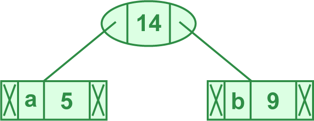
- 取出字次数最小的两个元素 (12, 'c'), (13, 'd')，合并为 (25, 'cd')
- 得 (14, 'ab'), (16, 'e'), (45, 'f'), (25, 'cd')
- 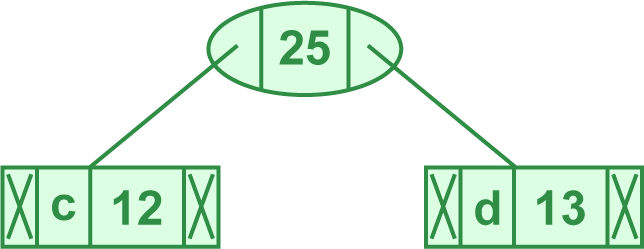
- 取出字次数最小的两个元素 (14, 'ab'), (16, 'e')，合并为 (30, 'abe')
- 得 (25, 'cd'), (45, 'f'), (30, 'abe')
- 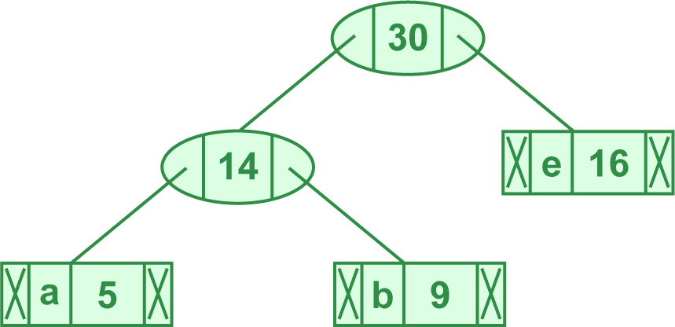
- 取出字次数最小的两个元素 (25, 'cd'), (30, 'abe')，合并为 (55, 'cdeab')
- 得 (45, 'f'), (55, 'CDEAB')
- 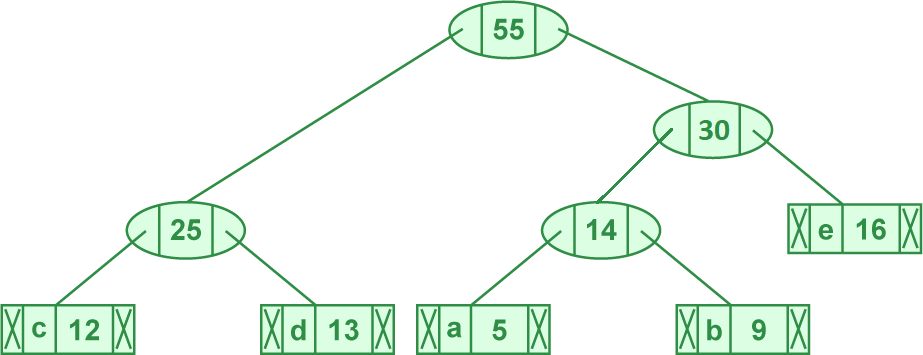
- 取出字次数最小的两个元素 (45, 'f'), (55, 'cdeab')，合并为 (100, 'fcdeab')
- 得 (100, 'FCDEAB')
- 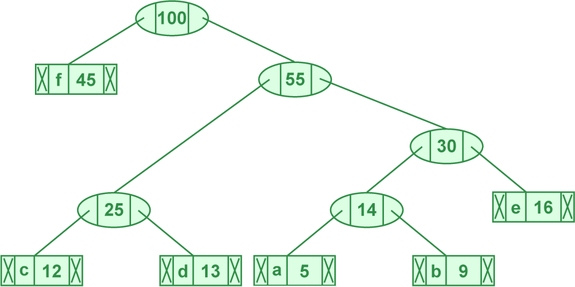
- 取出字次数最小的两个元素 (5, 'a'), (9, 'b')，合为 (14, 'ab')
- 生成编码：
- 从霍夫曼树根节点开始，为每个字符生成霍夫曼编码：
| 字符 | 编码 |
|---|---|
| F | 0 |
| C | 1-0-0 |
| D | 1-0-1 |
| A | 1-1-0-0 |
| B | 1-1-0-1 |
| E | 1-1-1 |
从上面的内容可见，熵编码是一种无损压缩（例如代码和小说都是文本，文本编码不可更改其内容）。既然是无损，那么不同的熵编码算法之间就只有编码速度和压缩率两个判断标准。x264 中使用了上下文自适应可变长度编码 Context Adaptive Variable Length Coding 和压缩率更高，速度慢一点的上下文自适应二进制算数编码 Context Adaptive Binary Arithmetic Coding CABAC。CABAC 的原理见 x265 教程网页版 - 熵编码
--no-cabac
<开关，不推荐>关闭 CABAC，使用 CAVLC
优化熵编码
残差 DCT 系子
Residual DCT coefficients 代表变换后量化前，已知经过量化后会被抹除的 DCT 系子。DCT 变换的例子见本教程的 变换 - DCT 变换 部分。总之就是与“残差块”无关，只是都叫做残差而已。
编码块标记 CBF
Coded block flag 会被标在预测和/或与其相应的变换单元（亮度块加色度块）中表示该单元是否附有较多的残差系子：CBF=1 代表有、0 代表没有。引导四叉树 quadtree 算法进一步分枝——宏块向下分块。详见 US9749645B2。

图：四叉树的分块。见维基百科
DCT 归零优化 Decimate
由上可知，录像与电影片源中的动态噪点会直接干扰编码器的分块，导致熵编码总是要处理系子数量少的 8x8，4x4 分块，而 x264 设计时面向了 640x480 分辨率的视频，所以就有了专门用于避免无效分块，避免性能和熵编码压缩率被浪费的系子归零处理（现已淘汰但默认开启）。具体是：
- 8x8 亮度块中分量为 -3~3 的 DCT 系子归零
- 16x16 亮度块中分量为 -5~5 的 DCT 系子归零
- 色度块中分量为 -6~6 的 DCT 系子归零
- 优化后的块回到原来的编码步骤——量化中
--no-dct-decimate
<开关，默认关>关闭 DCT 变换的低强度系子归零操作，以减少细节损失，降低有损压缩。适合幻灯片录屏等画面极其干净，或经过大量滤镜过滤噪声，--crf < 17或 ABR --bitrate > 500000 编码策略的源视频
死区量化器 Dead-zone Quantizer 优化
死区，也叫 dead-band，netual-zone，或无作用区，代表输入到输出波形中可归零的部分。
图：信号死区设 0.5 时，输入到输出 y=x 波形的变化。见维基百科
死区量化器的用途同上。x264 中，--trellis没有完全开启（2）时，死区量化器会被替代启用。默认设置下：
- 帧间亮度块中，分量为 -21~21 的 DCT 系子归零
- 帧内亮度块中，分量为 -11~11 的 DCT 系子归零
- 优化后的块回到原来的编码步骤——量化中
因此，结果是在高分辨率下，默认设置对画面细节的涂抹较强，所以一般建议 --trellis 2，或在最少大于等于 1600x900 分辨率、--trellis < 2 的时候更改死区量化器相关参数的默认值。
--deadzone-inter
<整数 0~32，默认 21，--trellis 小于 2 时开启>一种逻辑简单的帧间再量化——细节面积小于死区就删掉，大就保留。一般用途建议 8，高画质建议 6
--deadzone-intra
<整数 0~32，默认 11，--trellis 小于 2 时开启>一种逻辑简单的帧间再量化——细节面积小于死区就删掉，大就保留。一般用途建议 8，高画质建议 4
软判决率失真游程走线优化 - SDQ trellis
Soft decision quantization / SDQ trellis 算法。通过限制量化后块中的 DCT 系子 coefficients 强度，甚至偏移当前系子的强度值到临近系子，以保证游程编码中走线的平稳。过程中由率失真计算确认对画面的影响符合预期质量，从而提高压缩率。--trellis 应用于量化步骤之后，并且对少数突兀的 DCT 系子强度做了平均化，所以叫“再量化”。详见 x265 教程 - 优化熵编码
--trellis
<整数，范围 0~2, 推荐 2>软判决优化 CABAC 的率失真再量化。
- 1调整模式决策 mode decision 处理完的块，快速压制用
- 2同时调整帧内帧间参考和分块完成的块，效果最好
色彩信息
重复一开始说明的物理亮度：可见光电磁波的强度或振幅，以流明 lumen/lm，坎德拉/烛光量 candela/cd，或尼特 nits/cdm2 计量：
- 1cd/lm 大约为一支普通蜡烛的亮度。
- 由于是强度，一般来说，灯泡电压越高、火药能量密度越高，发光就越明亮
- 因此定义：能量和光强/光压的相关性呈正比
- Nits 代表 1cd 光源投射到一平方米（一般情况下距离一米）区域后所剩的亮度，主要用于显示器的亮度设定。一般来说，1 nit ≈ 3.426 lm，但实际的换算关系取决于光源和测量仪器的不同与误差。
高动态范围 High Dynamic Range HDR
原本是高端音响的标准，代表最小音量下没有一点电流噪声，最大音量可以和真实场景媲美的性能。与扬声器的大小和材质是否匹配场景相关，即「重硬件轻软件」。因为只要硬件达到 HDR 1000 规格，那么只要调高亮度就可以了；而随便一个中位水平的电视/显示器/手机屏幕亮度都能达到 HDR 400 标准。
HDR 信息分为硬件、软件、以及数据，共 3 类不统一的标准。为保证色彩正确，压制时应额外检查并确保与视频源的一致性。如：

图 1: cll 1000,640. master-display 由 G(13250…) 开头，L(10000000,1) 结尾

图 2: cll 1655,117/L(40000000,50)/colorprim bt2020/colormatrix bt2020nc/transfer smpte2084
--master-display
<G(x,y)B(,)R(,)WP(,)L(,)（绿，蓝，红，白点，光强）>写进 SEI 信息里，告诉解码端色彩空间/色域信息用
- HDR 标准设立时还没有 HDR 电视，所以就把 master-display 写成必须参数了，而最重要的信息反而是 cll。
- 绿蓝红 GBR 和白点 WP 指马蹄形色域的三角 + 白点 4 个位置的值×50000
- 光强 L 的单位是 candela×10000
- SDR 视频的 L 是 1000,1。压制 HDR 视频前一定要看视频信息再设 L，见上图
- DCI-P3 电影业内：G(13250,34500)B(7500,3000)R(34000,16000)WP(15635,16450)L(?,1)
- bt709：G(15000,30000)B(7500,3000)R(32000,16500)WP(15635,16450)L(?,1)
- bt2020 超清：G(8500,39850)B(6550,2300)R(35400,14600)WP(15635,16450)L(?,1)
- RGB 原信息 (对照小数格式的视频信息，然后选择上面对应的参数):
- DCI-P3：G(x0.265,y0.690),B(x0.150,y0.060),R(x0.680,y0.320),WP(x0.3127,y0.329)
- bt709：G(x0.30,y0.60),B(x0.150,y0.060),R(x0.640,y0.330),WP(x0.3127,y0.329)
- bt2020：G(x0.170,y0.797),B(x0.131,y0.046),R(x0.708,y0.292),WP(x0.3127,y0.329)
Video Usability Information（VUI 元数据）
VUI 是元数据，播放器会读取这些元数据来选择特定的色彩空间播放视频，由于 HDR 视频的标准受到厂商竞争割据等因素，用户需要手动指定 HDR 参数到 VUI 中才能正确播放（不过，有时电视厂商会为了节省成本而只读取一小部分信息，如只读取 MaxCLL 和 MaxFall）。
光强/光压 Candela 等于尼特，即\(1 \text{cd} = 1 \text{nit}\)。因 bt601，709，HDR-PQ，HLG 标准重视的亮度范围，曲线所异（偏亮或偏暗），故需要量化曲线，心理学优化，模式决策的重适配。
--cll
<最大内容光强，最大平均光强>压制 HDR 源一定照源视频信息设，找不到不要用，见上图例。
--colorprim
<字符>播放用三原色 (以及白点) 指标，查看视频信息可知：bt470m，bt470bg，smpte170m，smpte240m，film，bt2020，smpte428，smpte431，smpte432。如图 1 为 bt.2020。
--colormatrix
<字符>播放用矩阵格式/系数指标：fcc，bt470bg，smpte170m，smpte240m，GBR，YCgCo，bt2020c，smpte2085，chroma-derived-nc，chroma-derived-c，ICtCp。
注：不支持 bt2020nc
--transfer
<字符>传输特质：bt470m，bt470bg，smpte170m，smpte240m，linear，log100，log316，iec61966-2-4，bt1361e，iec61966-2-1，bt2020-10，bt2020-12，smpte2084，smpte428，arib-std-b67。
上图图 2 的 PQ 即 st.2084 的标准，所以参数值为 smpte2084。
预设参数
--preset
<ultrafast/superfast/veryfast/faster/fast/medium/slow/slower/veryslow/placebo>见下：
| 参数\预设 | ultrafast | superfast | veryfast | faster | fast | medium | slow | slower | veryslow | placebo |
|---|---|---|---|---|---|---|---|---|---|---|
| b-adapt | 0 | 默认 1 | 2 | |||||||
| bframes | 0 | 默认 3 | 8 | 16 | ||||||
| direct | 默认 spatio | auto | ||||||||
| me | dia | 默认 hex | umh | tesa | ||||||
| merange | 默认 16 | 24 | ||||||||
| partitions | none | i8x8,i4x4 | 默认 p8x8,b8x8,i8x8,i4x4 | all | ||||||
| rc-lookahead | 0 | 10 | 20 | 30 | 默认 40 | 50 | 60 | |||
| ref | 1 | 2 | 默认 3 | 5 | 8 | 16 | ||||
| subme | 0 | 1 | 2 | 4 | 6 | 默认 7 | 8 | 9 | 10 | 11 |
| trellis | 0 | 默认 1 | 2 | |||||||
| weightp | 0 | 1 | 默认 2 | |||||||
| no-weightb | 1 | 默认 0 | ||||||||
| no-8x8dct | 1 | 默认 0 | ||||||||
| no-cabac | 1 | 默认 0 | ||||||||
| no-deblock | 1 | 默认 0 | ||||||||
| no-mbtree | 1 | 默认 0 | ||||||||
| no-mixed-refs | 1 | 默认 0 | ||||||||
| scenecut | 0 | 默认 40 | ||||||||
| no-fast-pskip | 默认 0 | 1 | ||||||||
| slow-first-pass | 默认 0 | 1 | ||||||||
--tune
<zerolatency/animation/grain/film/fastdecode/psnr/ssim>更改 preset 的一些参数，见下：
- zerolatency集中算力到一次编码一帧，并尽可能关闭率控制和 B 帧功能：
--bframes 0 --force-cfr --no-mbtree --sync-lookahead 0 --sliced-threads --rc-lookahead 0
- grain保留高频信号/最高画质：
--deblock -2:-2 --psy-rd <跳过>:0.25 --aq-strength 0.5 --no-dct-decimate --deadzone-inter 6 --deadzone-intra 6 --ipratio 1.1 --pbratio 1.1 --qcomp 0.8
- animation优化动漫场景画面：
--ref <若当前设定大于 1 则乘以 2> --bframes <当前设定值 +=2> --deblock 1:1 --psy-rd 0.4:<跳过> --aq-strength 0.6
- fastdecode降低解码算力占用以降低超高帧率 - 分辨率解码负载
--no-deblock --no-cabac --no-weightb --weightp 0
- film优化录像与电影场景画面
--deblock -1:-1 --psy-rd <跳过>:0.15
- stillinage优化静态图像画面
--deblock -3:-3 --psy-rd 2.0:0.7 --aq-strength 1.2
- psnr尽可能降低编码结果和原画的均方差 MSE 差异，但与画质关系不大
--aq-mode 0 --no-psy
- ssim比
--tune psnr缓和一些--aq-mode 2 --no-psy
线程控制
线程管理一
不同的算法和数据决定了不同的多线程优化性能。量化的步骤中，进程之间几乎不需要共享数据，进程占用和运算速度也不变；而冗余的步骤中则是反过来——占用可大可小，速度忽快忽慢，也需要进程间共享一定数据/内存。可以说如果想要让进程吃满更多核心，就得尽可能减少搜索冗余相关算法的强度。x264 编码器一共会占用 --threads 加 --lookahead-threads条进程。而 --threads 达到并超过 16~24 时，可以看到一定的画质下降，以及在更多核心的电脑上出现“吃不满”的问题，这就是 x264 中冗余算法的优化极限了。
因此，设置创建比电脑处理器更多的线程只会从任务数量上冲淡如各个冗余步骤需要“等到之前步骤给出结果才能运行”的时间窗口，甚至有时等不到就跳过，导致码率增加，画质降低，得不偿失。
x264 并没有对多路/多 CPU 节点电脑优化，但 x265 使用线程池 实现了。
--threads
<整数，建议保持默认（等于 CPU 线程）>由于参考帧步骤要等其之前的步骤算完才开始，所以远超默认的值会因为处理器随机算的特性而降低参考帧的计算时间，使码率增加，画质降低，速度变慢
--non-deterministic
<开关，默认关，推荐开> 降低多线程完算性——减少多线程共享数据的可靠性，些微提高画质。使用后每个进程的冗余判断更为独断，且让新的动态搜索线程得知「旧动态搜索线程线程实际搜素过，而非参数设定」的区域。「完算性」一般仅代表通过完整计算得到结果，而不是提前跳过的计算特征。而启用多线程，VBV 都会降低完算性
--lookahead-threads
<整数，建议保持默认（应该是 --threads 的 1/4）>指定前瞻进程占用的线程数，速度太快则其后的编码进程跟不上，太慢则其后的编码进程要等结果，所以不需要改动
--frame-threads
<整数，建议保持默认（自动）>指定 --threads 中分配多少线程给编码帧，决定一次同时编码多少帧（量化，优化，帧内预测，熵编码）。剩下则是上下游的处理（连续 B 帧推演，SEI，完算性错误管理），后者占用较少
--sliced-threads
<开关，默认关>逐条带分配多线程。x264 r1607 前的多线程分配机制，后来因为问题太多而改成了逐帧分配多线程。剩下直播录屏等场景降低延迟一个用途
- 熵编码中，CABAC（见 x265 教程 - 熵编码）因为内容不连续所以经常重设，降低压缩率
- 动态信息的动态矢量长度被限制到条带分片内部，干扰动态补偿，降低压缩率
- 帧内冗余降级为条带内冗余，降低帧内编码压缩率
- 增加了相当一部分（多余条带与 NAL 封包的）文件头
- 大量条带的并行提高了编码单帧的速度，降低延迟
线程管理二
退一步讲，若能占满全部 CPU 核心，那么也算是实现了多线程优化。因此，关于“最大化利用 CPU 核心数量很多的电脑并提升画质”的平价方法就是多开几个编码，并限制每个编码占用的 CPU 线程数实现。例如 Windows 批处理提供的 START 命令实现异步并行（多开些编码），搭配上述的 --threads 命令限制每个编码的进程数实现。
x264/5 中，理论画质与性能最平衡的多线程数实际是 4，所以若设定 --threads 4，则 --lookahead-threads 等于 1。得到共 5 个线程占用。
线程管理三
此外还有一种难办的情况：游戏录屏。这会导致编码进程与其它进程争夺 CPU 或内存资源。后者可以通过升级内存解决，但前者不同的地方在于“多线程优化越好则越糟”——因为软件开发也遵循了“应该占满全部 CPU 核心”的逻辑，因此当 CPU 的算力或核心数没有超过两个程序占用加起来的峰值，就只能保护其中优先级较高的进程了。另一边，多人游戏的反作弊机制和防盗版机制的升级也增加了游戏对 CPU 和内存的压力。
此时，“冗余”步骤的不稳定占用很可能会超出 CPU 算力极限导致卡顿（除非内存或散热不好，否则不会死机），因此要适当降低冗余强度来保证流畅（但需要一定经验并花费时间测试）。大多数人应对这种情况最简单的方案只有使用显卡或核显/SoC“附赠”的硬件视频编码器，或者购置高端些的视频采集卡两种方法实现；但如果 CPU 的算力足够同时流畅运行大型游戏和视频编码器，则可以参考附录：急用版 x264 教程配置 OBS 录屏的一些方案。
x264 内置滤镜
降噪滤镜
--nr
<整数 0~65536，降噪范围 100~1000，不推荐>当 ABR/VBV 指定了高于 --qpmax 或默认最大量化强度时，会调用这个滤镜。如果有降噪需求则建议使用效果更好的外部滤镜工具，或至少使用 --vf hqdn3d 滤镜
AviSynth 滤镜
--vf
<crop:[←],[↑],[→],[↓]/pad: [←],[↑],[→],[↓]/resize:[宽，高]，[变宽比]，[装盒]，[色度采样]，[缩放算法/select_every:步，帧，帧…]/hqdn3d:[空域 Y 降噪强度]，[空域 C 降噪强度]，[降噪时域 Y 强度]，[时域 C 降噪强度]/yadif[模式],[顺序]>裁剪，加边，缩放/更改分辨率，删除/保留视频帧，降噪，色彩空间转换滤镜。例：
- crop:3,4,5,6：视频左，上，右，下分别裁剪 3，4，5，6 个像素
- pad:0,7,8,9,,,255,255,255：视频上，右，下分别加 7，8，9 个像素的 #FFFFFF（白）边
- pad:,,,,1920,1080,1,36,38：视频对称加减边到 1920x1080 像素，若加边则加 #013638（深蓝绿）边
- pad:,,,,3840,2160,,,：视频加减边到 3840x2160 像素，若加边则加 #000000（黑）边
- resize:1060,1080,96:53,,,lanczos：1920x1080 视频的宽使用 lanczos 算法缩小 53/96；同时标记视频宽在播放时，宽度应拉伸 96:53 倍（96:53 长方像素），显示为 1920x1080
- resize:1280,720,,i444,spline：使用样条插值缩放输入视频到 1280x720，储存为 YCbCr 4:4:4
- resize:1060,1080,,width,i420,lanczos：使用 lanzcos 插值，只将宽 width 缩放到 1060px，储存为 YCbCr 4:2:0
- hqdn3d:0,0,3,5：仅开启时域降噪滤镜，分别在 Y，C 平面设定强度 3,5
- vflip：左右翻转视频
- subtitles：在集成 VSFilter64.dll 动态链接库的情况下渲染字幕文件，需
--sub导入字幕文件，然后使用--vf subtitles参数渲染字幕到视频 - select_every:5,0,1,3,4：视频每 8 帧中留第 1，2，4，5 帧，丢弃第 3 帧
- AviSynth 中主要用于搭配 IVTC 滤镜使用，但 x264 中没有这些滤镜
- yadif:1,tff：使用 bobbing 算法，上场优先模式将交错视频转为逐行视频
这些滤镜可以在实现简单的画面处理。使用多个滤镜的例子如：--vf crop:10,0,10,0/resize:640,480,,,,lanczos。
- resize 中 [select_every] 滤镜详见 AviSynth Wiki
- resize 中 [色彩空间] 可用的值有：i400,i420,yv12,nv12,nv21,i422,yv16,nv16,yuyv,uyvy,i444,yv24,bgr,bgra,rgb
- resize 中 [缩放算法] 可用的值有：fastbilinear,bilinear,bicubic,experimental,point,area,bicublin,gauss,sinc,lanczos,spline
- yadif 是一种简单的交错转逐行滤镜，推荐用画质更好的外部滤镜，见附录 ε：交错转逐行与 IVTC
- x264 中内置的 yadif 滤镜来自 MPlayer，因此参数不同于 AviSynth：
- yadif 中 [模式] 可用的值有 0,1,2,3；[顺序] 可用的值有 tff 和 bff
- hdqn3d 是一种简单快速的时域 + 空域降噪滤镜。仅指定
--vf hqdn3d则使用默认强度（仅开启滤镜）为 4,3,6,4.5
--sub
<路径到文件，需 --vf subtitles 和 VSFilter64.dll>导入字幕文件，
工具下载
套壳 x264/libx264 的 GUI 编码压制软件
并没有特别好的选择。尤其是当能够使用 CLI 参数命令 ffmpeg.exe，x264.exe 后。
| Shana Encoder |
ffmpeg-CLI 搭配部分 GUI，上手较慢。使用了 ffmpeg 内嵌的 libx264，libx265，NVEnc |
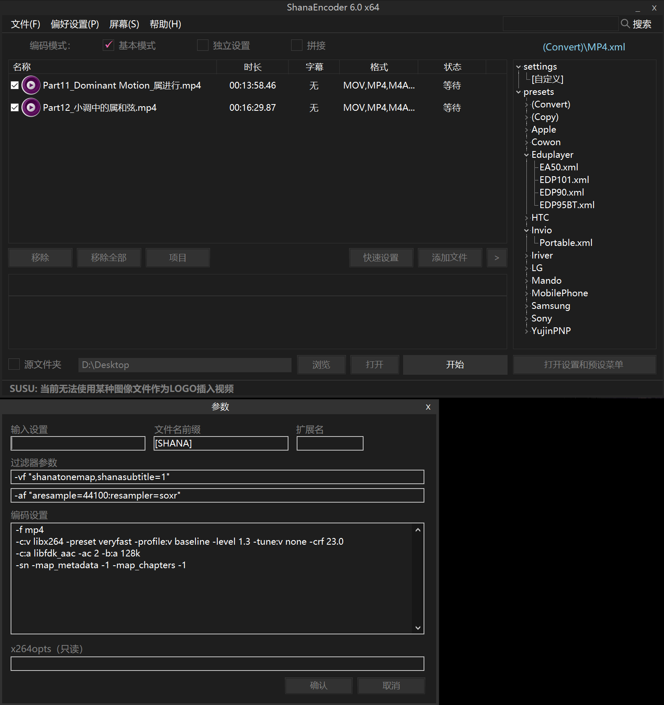 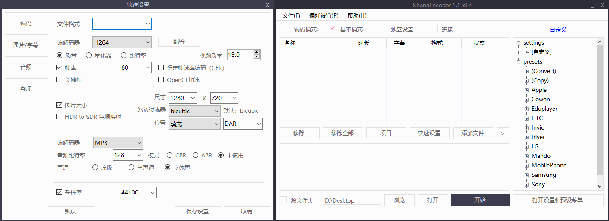 |
|---|---|---|
| Simple x264 Launcher | 内嵌 AviSynth，支持便携版 VapourSynth，额外支持 x265 和 NVEnc 编码器，适合批量压制 | 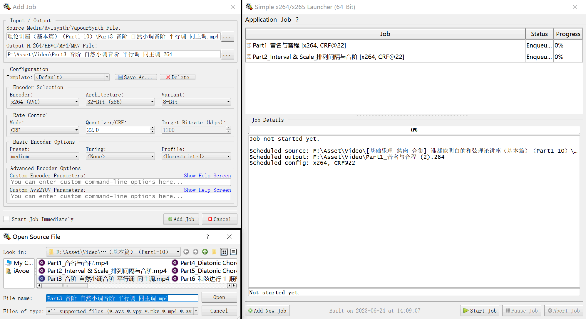 |
| 小丸工具箱 | 操作简单，适合入门的中文软件。网上能搜到详细教程。内嵌 MediaInfo，mp4box，Mkvtoolnix 镜像：百度云 提取码"crhu" |
 |
基本工具
| ffmpeg | 强大的 CLI 开源视音频处理工具。几乎所有的视音频处理都绕不开 | |
|---|---|---|
| mpv | 开源，支持便携的现代视频播放器。见 安装与配置教程 | 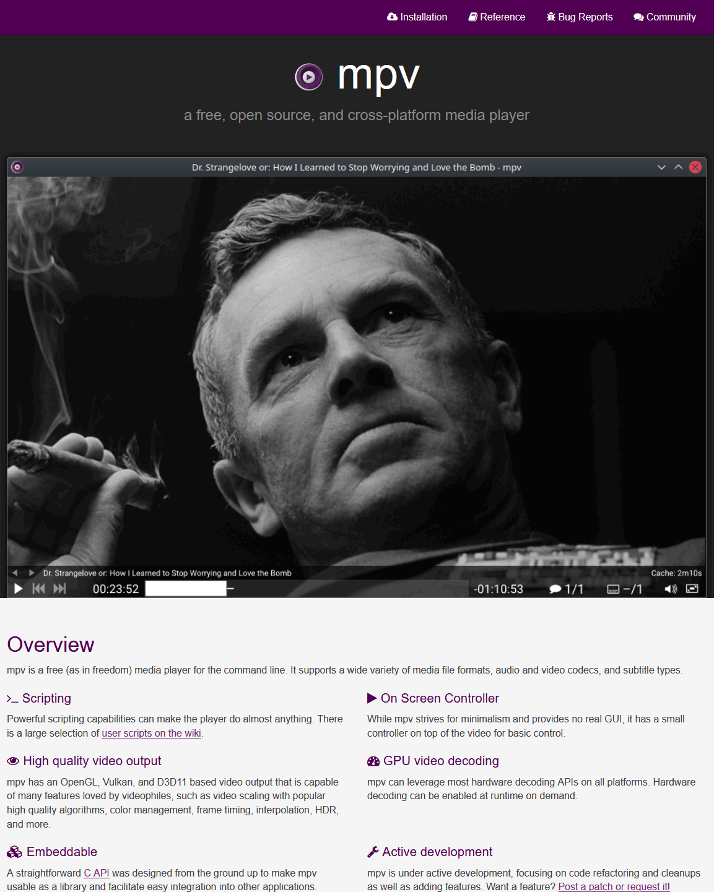 |
| Voukoder | 开源 Premiere Vegas After Effects 压制导出插件，分为 Voukoder 和 V-Connector 两部分 | 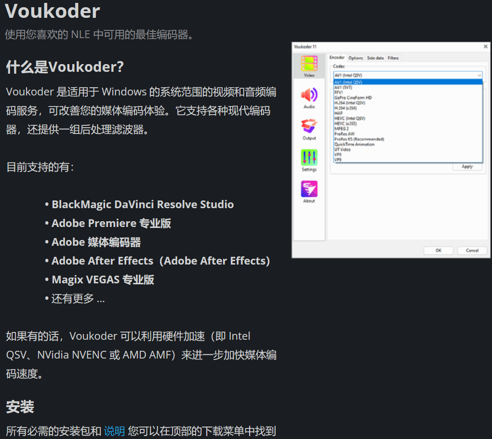 |
| OBS | 强大的开源直播框架和软件，设置略比传统录屏软件复杂，但效果也更好 | 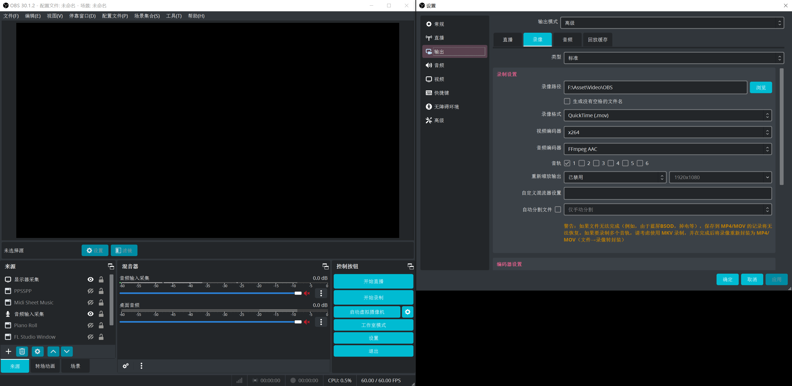 |
| MediaInfo | 开源的 GUI 媒体元数据/视音频格式读取器，用于配置正确的压制参数 |
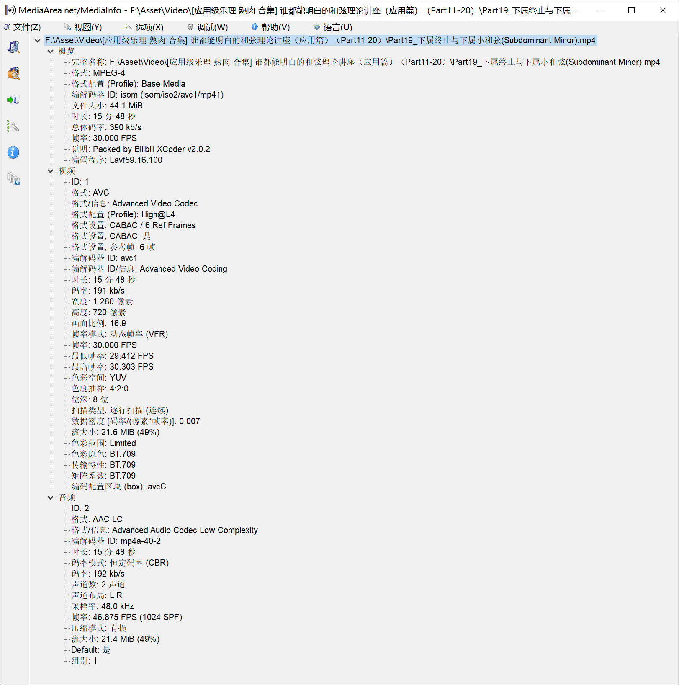 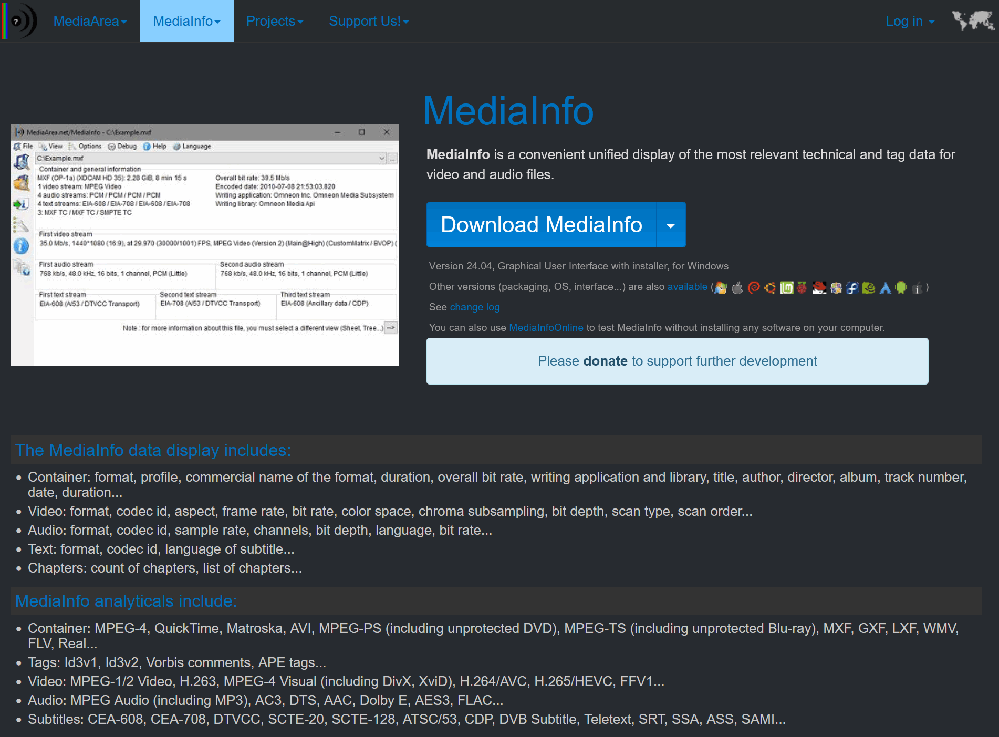 |
| ffprobe | CLI 视音频格式读取器，若检测所得信息与 MediaInfo 所异，则优先参考 ffprobe 见基本使用，以及搭配 Excel 的视频数据可视化教程 |
x264 本体
| Patman | 支持 FFMS2 Lavf 编解码 [8~10bit] |
|---|---|
| LigH | 支持 FFMS2 Lavf 编解码 [8~10bit] |
| jspdr (tMod) | 支持 FFMS2 Lavf 编解码，MCF 线程管理库 |
| x264 7mod | 支持 FFMS2 Lavf 编解码，支持 hqdn3d 降噪，镜像链接：谷歌盘/百度云 |
| Komisar KMod | 支持 FFMS2 编解码 [8][10]bit |
视频编码后偏色的各种原因
将编码前后的视频窗口至于同屏下，使用截图软件截图，再使用取色器测量特定区域的颜色：
- 偏黄：
Bt.709，Bt.2020 源被转换成了 Bt.601。可以通过
colormatrix=源矩阵:目标矩阵参数转换一段原视频做测试复现：
ffmpeg.exe -i "偏色前.mp4" -vf "colormatrix=bt709:bt601" -c:v libx264 -c:a copy -c:s copy "D:\Desktop\转601.mkv" - 偏绿： 使用了英伟达 NVDEC 硬件解码器导致的颜色错误，目前已知 RTX 3000 系显卡有。见 MPV 播放器 中的类似状况
- 对比度过低（1）： 编码器设定输入位深为 8bit，源视频为 10bit 或更高，没有滤镜工具转换源到 8bit，直接编码后可能导致
- 对比度过低（2）： 编码器设定输入色域为完整 Full，视频为有限色域 Limited，没有滤镜工具转换源到完整色域，直接编码后可能导致
ffmpeg 色深转换处理
ffmpeg 转换到完整：
ffmpeg.exe -i "limited.mp4" -vf "scale=in_range=limited:out_range=full" -color_range 2 -pix_fmt yuv420p -movflags +write_colr "full.mp4"
ffmpeg 转换到有限：
ffmpeg.exe -i "limited.mp4" -vf "scale=in_range=full:out_range=limited" -color_range 1 -pix_fmt yuv420p -movflags +write_colr "full.mp4"
"scale=in_range=limited:out_range=full代表输入和输出的范围-color_range选择编码和封装的色深密度（0~2）-movflags +write_colr在 .mp4 封装下写入色深密度元数据